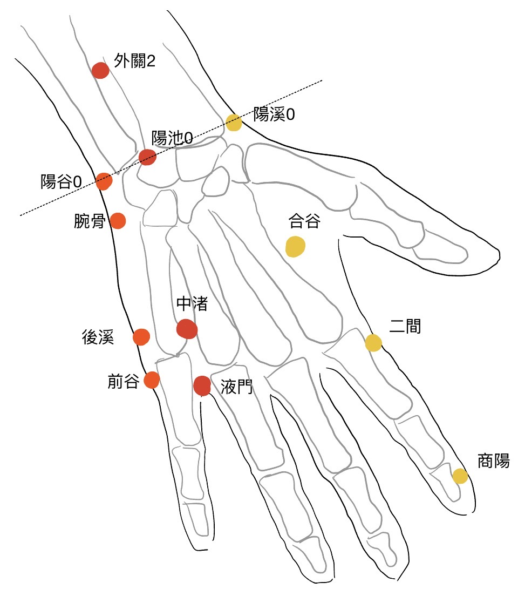
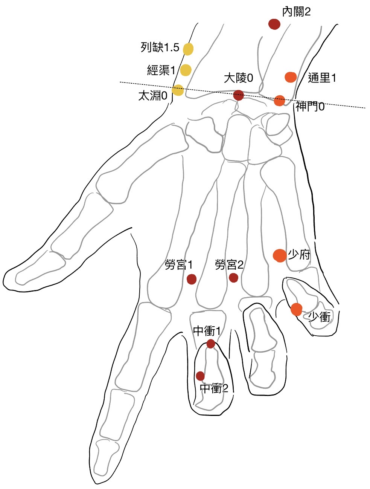
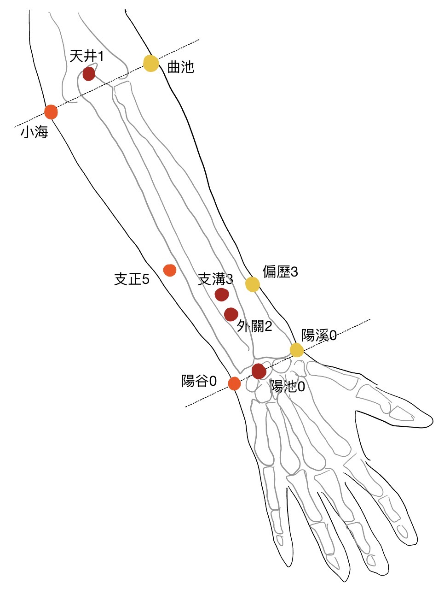
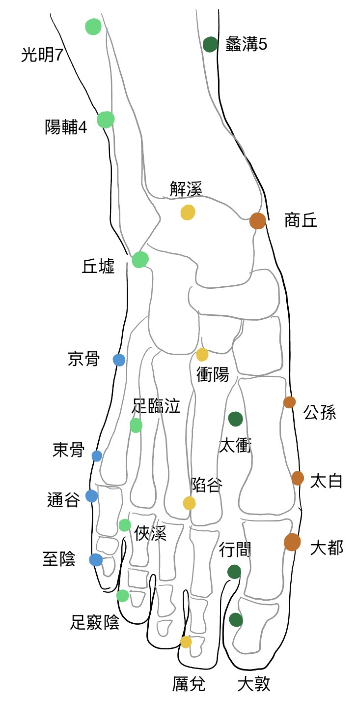
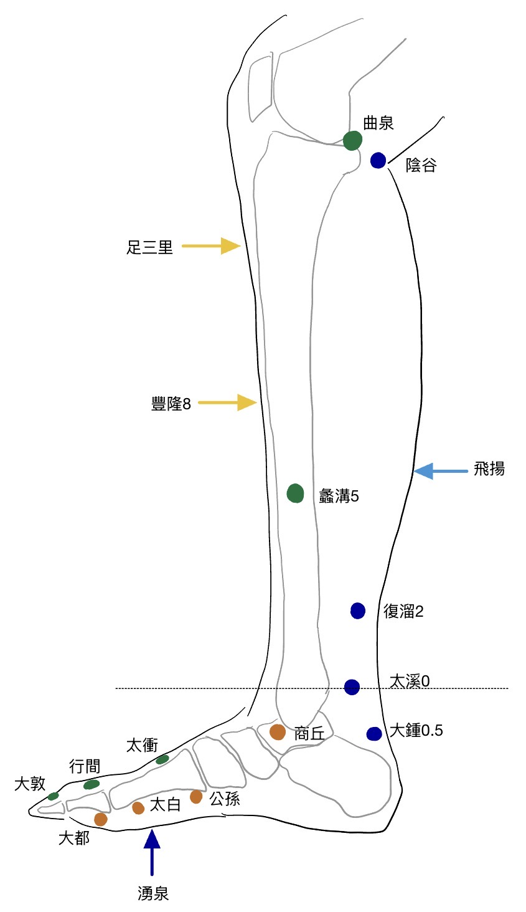

<!DOCTYPE html>
<html lang="zh-TW">
<head>
    <meta charset="UTF-8">
    <meta name="viewport" content="width=device-width, initial-scale=1.0">
    <title>針灸臨床決策輔助工具</title>
    
    <!-- PWA 設定 -->
    <link rel="manifest" href="manifest.json">
    <meta name="theme-color" content="#4f46e5">
    <meta name="apple-mobile-web-app-capable" content="yes">
    <meta name="apple-mobile-web-app-status-bar-style" content="black-translucent">
    <link rel="apple-touch-icon" href="icon.png">

    <!-- 載入 Tailwind CSS -->
    <script src="https://cdn.tailwindcss.com"></script>

    <!-- 載入 React & ReactDOM (UMD 穩定版) -->
    <script crossorigin src="https://cdnjs.cloudflare.com/ajax/libs/react/18.2.0/umd/react.production.min.js"></script>
    <script crossorigin src="https://cdnjs.cloudflare.com/ajax/libs/react-dom/18.2.0/umd/react-dom.production.min.js"></script>
    
    <!-- 載入 Babel -->
    <script src="https://cdnjs.cloudflare.com/ajax/libs/babel-standalone/7.23.6/babel.min.js"></script>

    <!-- 載入私人筆記資料存取與白名單清理工具 -->
    <script src="./lib/notes.js"></script>

    <style>
        body { -webkit-user-select: none; user-select: none; }
        ::-webkit-scrollbar { width: 0px; background: transparent; }
        .swipe-box { touch-action: none; } /* 防止滑動時觸發網頁捲動 */
        .note-editor, .note-content { -webkit-user-select: text; user-select: text; }
        .note-editor:empty:before { content: attr(data-placeholder); color: #94a3b8; pointer-events: none; display: block; }
    </style>
</head>
<body class="bg-slate-50">
    <div id="root"></div>

    <script type="text/babel">
        const { useState, useMemo, useEffect, useRef } = React;
        const { createRoot } = ReactDOM;

        // --- 內建圖示組件 ---
        const Icons = {
            Menu: () => <svg xmlns="http://www.w3.org/2000/svg" width="24" height="24" viewBox="0 0 24 24" fill="none" stroke="currentColor" strokeWidth="2" strokeLinecap="round" strokeLinejoin="round"><line x1="3" y1="12" x2="21" y2="12"></line><line x1="3" y1="6" x2="21" y2="6"></line><line x1="3" y1="18" x2="21" y2="18"></line></svg>,
            X: () => <svg xmlns="http://www.w3.org/2000/svg" width="24" height="24" viewBox="0 0 24 24" fill="none" stroke="currentColor" strokeWidth="2" strokeLinecap="round" strokeLinejoin="round"><line x1="18" y1="6" x2="6" y2="18"></line><line x1="6" y1="6" x2="18" y2="18"></line></svg>,
            User: () => <svg xmlns="http://www.w3.org/2000/svg" width="20" height="20" viewBox="0 0 24 24" fill="none" stroke="currentColor" strokeWidth="2" strokeLinecap="round" strokeLinejoin="round"><path d="M19 21v-2a4 4 0 0 0-4-4H9a4 4 0 0 0-4 4v2"/><circle cx="12" cy="7" r="4"/></svg>,
            Activity: () => <svg xmlns="http://www.w3.org/2000/svg" width="32" height="32" viewBox="0 0 24 24" fill="none" stroke="currentColor" strokeWidth="2" strokeLinecap="round" strokeLinejoin="round"><path d="M22 12h-4l-3 9L9 3l-3 9H2"/></svg>,
            ArrowRight: ({className}) => <svg xmlns="http://www.w3.org/2000/svg" width="24" height="24" viewBox="0 0 24 24" fill="none" stroke="currentColor" strokeWidth="2" strokeLinecap="round" strokeLinejoin="round" className={className}><path d="M5 12h14"/><path d="m12 5 7 7-7 7"/></svg>,
            RotateCcw: ({className}) => <svg xmlns="http://www.w3.org/2000/svg" width="24" height="24" viewBox="0 0 24 24" fill="none" stroke="currentColor" strokeWidth="2" strokeLinecap="round" strokeLinejoin="round" className={className}><path d="M3 12a9 9 0 1 0 9-9 9.75 9.75 0 0 0-6.74 2.74L3 8"/><path d="M3 3v5h5"/></svg>,
            MapPin: ({className}) => <svg xmlns="http://www.w3.org/2000/svg" width="24" height="24" viewBox="0 0 24 24" fill="none" stroke="currentColor" strokeWidth="2" strokeLinecap="round" strokeLinejoin="round" className={className}><path d="M20 10c0 6-8 12-8 12s-8-6-8-12a8 8 0 0 1 16 0Z"/><circle cx="12" cy="10" r="3"/></svg>,
            Copy: () => <svg xmlns="http://www.w3.org/2000/svg" width="20" height="20" viewBox="0 0 24 24" fill="none" stroke="currentColor" strokeWidth="2" strokeLinecap="round" strokeLinejoin="round"><rect x="9" y="9" width="13" height="13" rx="2" ry="2"></rect><path d="M5 15H4a2 2 0 0 1-2-2V4a2 2 0 0 1 2-2h9a2 2 0 0 1 2 2v1"></path></svg>,
            Check: () => <svg xmlns="http://www.w3.org/2000/svg" width="20" height="20" viewBox="0 0 24 24" fill="none" stroke="currentColor" strokeWidth="2" strokeLinecap="round" strokeLinejoin="round"><polyline points="20 6 9 17 4 12"></polyline></svg>,
            Pill: () => <svg xmlns="http://www.w3.org/2000/svg" width="20" height="20" viewBox="0 0 24 24" fill="none" stroke="currentColor" strokeWidth="2" strokeLinecap="round" strokeLinejoin="round"><path d="m10.5 20.5 10-10a4.95 4.95 0 1 0-7-7l-10 10a4.95 4.95 0 1 0 7 7Z"/><path d="m8.5 8.5 7 7"/></svg>,
            FileText: ({className}) => <svg xmlns="http://www.w3.org/2000/svg" width="20" height="20" viewBox="0 0 24 24" fill="none" stroke="currentColor" strokeWidth="2" strokeLinecap="round" strokeLinejoin="round" className={className}><path d="M14 2H6a2 2 0 0 0-2 2v16a2 2 0 0 0 2 2h12a2 2 0 0 0 2-2V8z"></path><polyline points="14 2 14 8 20 8"></polyline><line x1="16" y1="13" x2="8" y2="13"></line><line x1="16" y1="17" x2="8" y2="17"></line><polyline points="10 9 9 9 8 9"></polyline></svg>,
            Trash: ({className}) => <svg xmlns="http://www.w3.org/2000/svg" width="18" height="18" viewBox="0 0 24 24" fill="none" stroke="currentColor" strokeWidth="2" strokeLinecap="round" strokeLinejoin="round" className={className}><polyline points="3 6 5 6 21 6"></polyline><path d="M19 6v14a2 2 0 0 1-2 2H7a2 2 0 0 1-2-2V6m3 0V4a2 2 0 0 1 2-2h4a2 2 0 0 1 2 2v2"></path></svg>,
            Edit: ({className}) => <svg xmlns="http://www.w3.org/2000/svg" width="18" height="18" viewBox="0 0 24 24" fill="none" stroke="currentColor" strokeWidth="2" strokeLinecap="round" strokeLinejoin="round" className={className}><path d="M11 4H4a2 2 0 0 0-2 2v14a2 2 0 0 0 2 2h14a2 2 0 0 0 2-2v-7"></path><path d="M18.5 2.5a2.121 2.121 0 0 1 3 3L12 15l-4 1 1-4 9.5-9.5z"></path></svg>,
            AlertTriangle: ({className}) => <svg xmlns="http://www.w3.org/2000/svg" width="20" height="20" viewBox="0 0 24 24" fill="none" stroke="currentColor" strokeWidth="2" strokeLinecap="round" strokeLinejoin="round" className={className}><path d="M10.29 3.86L1.82 18a2 2 0 0 0 1.71 3h16.94a2 2 0 0 0 1.71-3L13.71 3.86a2 2 0 0 0-3.42 0z"></path><line x1="12" y1="9" x2="12" y2="13"></line><line x1="12" y1="17" x2="12.01" y2="17"></line></svg>
        };

        const POINT_LOCATIONS = {
          '少府': { icon: '✋', text: '手掌面，第4、5掌骨之間，握拳時小指尖處。' },
          '勞宮': { icon: '✋', text: '手掌心，第2、3掌骨之間，握拳時中指尖處。' },
          '少衝': { icon: '✋', text: '小指末節橈側，距指甲角0.1寸。' },
          '中衝': { icon: '✋', text: '中指末節尖端中央。' },
          '前谷': { icon: '✋', text: '手尺側，微握拳，第5指掌關節前尺側，橫紋頭赤白肉際。' },
          '後溪': { icon: '✋', text: '手尺側，微握拳，第5指掌關節後尺側，橫紋頭赤白肉際。' },
          '液門': { icon: '✋', text: '手背，第4、5指間，指蹼緣後方赤白肉際。' },
          '中渚': { icon: '✋', text: '手背，第4、5掌骨間，第4掌指關節後上方凹陷處。' },
          '商陽': { icon: '✋', text: '食指末節橈側，距指甲角0.1寸。' },
          '二間': { icon: '✋', text: '食指本節（第2掌指關節）前，橈側凹陷處。' },
          '經渠': { icon: '💪', text: '前臂掌面橈側，橈骨莖突與橈動脈之間。' },
          '陽溪': { icon: '💪', text: '腕背橫紋橈側，手拇指向上翹起時，在伸拇短肌腱與伸拇長肌腱之間的凹陷中。' },
          '支溝': { icon: '💪', text: '前臂背側，陽池穴上3寸，尺骨與橈骨之間。' },
          '天井': { icon: '💪', text: '臂外側，屈肘時，當肘尖直上1寸凹陷處。' },
          '陽谷': { icon: '💪', text: '手腕尺側，尺骨莖突與三角骨之間的凹陷處。' },
          '小海': { icon: '💪', text: '肘內側，尺骨鷹嘴與肱骨內上髁之間凹陷處。' },
          '太淵': { icon: '💪', text: '腕掌側橫紋橈側，橈動脈搏動處。' },
          '曲池': { icon: '💪', text: '肘橫紋外側端，屈肘，當尺澤與肱骨外上髁連線中點。' },
          '尺澤': { icon: '💪', text: '肘橫紋中，肱二頭肌腱橈側凹陷處。' },
          '神門': { icon: '💪', text: '腕部腕掌橫紋上，尺側腕屈肌腱橈側凹陷處。' },
          '大陵': { icon: '💪', text: '腕掌橫紋的中點處，當掌長肌腱與橈側腕屈肌腱之間。' },
          '大敦': { icon: '🦶', text: '足大趾末節外側，距指甲角0.1寸。' },
          '足竅陰': { icon: '🦶', text: '足第4趾末節外側，距指甲角0.1寸。' },
          '太白': { icon: '🦶', text: '足內側緣，足大趾本節（第1跖趾關節）後下方赤白肉際凹陷處。' },
          '陷谷': { icon: '🦶', text: '足背，第2、3跖骨結合部前方凹陷處。' },
          '足臨泣': { icon: '🦶', text: '足背外側，第4、5跖骨底結合部前方，第5長伸肌腱外側凹陷處。' },
          '俠溪': { icon: '🦶', text: '足背外側，第4、5趾間，趾蹼緣後方赤白肉際。' },
          '通谷': { icon: '🦶', text: '足外側，足小趾本節（第5跖趾關節）前下方赤白肉際凹陷處。' },
          '束骨': { icon: '🦶', text: '足外側，足小趾本節（第5跖趾關節）後下方赤白肉際凹陷處。' },
          '至陰': { icon: '🦶', text: '足小趾末節外側，距指甲角0.1寸。' },
          '大都': { icon: '🦶', text: '足內側緣，足大趾本節（第1跖趾關節）前下方赤白肉際凹陷處。' },
          '厲兌': { icon: '🦶', text: '足第2趾末節外側，距指甲角0.1寸。' },
          '解溪': { icon: '🦶', text: '足背與小腿交界處的橫紋中央凹陷處，拇長伸肌腱與趾長伸肌腱之間。' },
          '行間': { icon: '🦶', text: '足背，第1、2趾間，趾蹼緣後方赤白肉際。' },
          '湧泉': { icon: '🦶', text: '足底，卷足時足前部凹陷處。' },
          '商丘': { icon: '🦶', text: '足內踝前下方凹陷中。' },
          '陰谷': { icon: '🦵', text: '膕窩內側，屈膝時，當半腱肌肌腱與半膜肌肌腱之間。' },
          '委中': { icon: '🦵', text: '膕橫紋中點。' },
          '曲泉': { icon: '🦵', text: '膝內側，屈膝，當膝關節內側面橫紋內側端，股骨內側髁的後緣，半腱肌、半膜肌止端的前緣凹陷處。' },
          '陽輔': { icon: '🦵', text: '小腿外側，外踝尖上4寸，腓骨前緣稍前方。' },
          '復溜': { icon: '🦵', text: '小腿內側，太溪直上2寸，跟腱的前方。' },
          '足三里': { icon: '🦵', text: '小腿前外側，外膝眼下3寸，脛骨前緣一橫指。' },
          // 新增穴位
          '列缺': { icon: '💪', text: '腕部橈骨莖突後骨縫間，肱橈肌與拇長展肌腱之間' },
          '偏歷': { icon: '💪', text: '前臂背面橈側，腕橫紋上3寸處' },
          '內關': { icon: '💪', text: '前臂掌側，腕橫紋上2寸，掌長肌腱與橈側腕屈肌腱之間' },
          '外關': { icon: '💪', text: '前臂伸側面腕背橫紋後二寸，尺骨與橈骨之間' },
          '通里': { icon: '💪', text: '在前臂掌側面，腕橫紋上1寸，尺側屈腕肌肌腱橈側緣凹陷處' },
          '支正': { icon: '💪', text: '前臂背面尺側，小海與陽谷的連線上，腕背橫紋上5寸處。' },
          '公孫': { icon: '🦶', text: '在足內側緣，第1跖骨基底前下方凹陷處，當太白後1寸' },
          '豐隆': { icon: '🦵', text: '在小腿前外側，外踝尖上8寸，脛骨前緣外二橫指處' },
          '蠡溝': { icon: '🦵', text: '小腿內側，內踝尖上五寸，脛骨內側面中。' },
          '光明': { icon: '🦵', text: '在小腿外側部，外踝尖上五寸，腓骨前緣凹陷處，當趾長伸肌與腓骨短肌之間。' },
          '大鍾': { icon: '🦶', text: '在足內側部，內踝後下方，跟腱附著部內側前方凹陷處，當太溪後下5分。' },
          '飛揚': { icon: '🦵', text: '小腿後面，外踝後（崑崙）直上7寸，當承山外下方1寸凹陷處。' },
          '合谷': { icon: '✋', text: '手背第1～2掌骨間，第2掌骨橈側的中點處。' },
          '陽池': { icon: '✋', text: '腕背橫紋中，當指伸肌腱尺側緣凹陷處。' },
          '腕骨': { icon: '✋', text: '在手掌尺側赤白肉際，第5掌骨基底與鉤骨之間凹陷處' },
          '衝陽': { icon: '🦶', text: '在足背最高處，拇長伸肌腱與趾長伸肌腱之間，足背動脈搏動處。' },
          '丘墟': { icon: '🦶', text: '足背，外踝前下方，伸趾長肌腱外側，距跟關節間凹陷處。' },
          '京骨': { icon: '🦶', text: '在足外側部，第5跖骨粗隆下方赤白肉際處，當小趾尖與足跟底後緣連線的中點。' },
          '太衝': { icon: '🦶', text: '足背第1～2跖骨間隙的後方凹陷處。當行間後二寸。' },
          '太溪': { icon: '🦶', text: '足內側部，內踝後方，內踝尖與跟腱之間凹陷處。' },
          '申脈': { icon: '🦶', text: '足外側部，外踝直下方凹陷中。' },
          '照海': { icon: '🦶', text: '足內側部，內踝尖下方凹陷處。' },
        };

        const TANGYE_RULES = {
          male: {
            '心火': {
              '太過': { sedate: { point: '少府', side: 'left', desc: '向心、吐氣進針、深刺45度、陰數、順轉' }, tonify: { point: '前谷', side: 'right', desc: '遠心、吸氣進針、淺刺15度、陽數、順轉' } },
              '不足': { tonify: { point: '少府', side: 'left', desc: '遠心、吸氣進針、淺刺15度、陽數、順轉' }, sedate: { point: '前谷', side: 'right', desc: '向心、吐氣進針、深刺45度、陰數、順轉' } }
            },
            '肝木': {
              '太過': { sedate: { point: '大敦', side: 'right', desc: '向心、吐氣進針、深刺45度、陰數、順轉' }, tonify: { point: '足竅陰', side: 'left', desc: '遠心、吸氣進針、淺刺15度、陽數、順轉' } },
              '不足': { tonify: { point: '大敦', side: 'right', desc: '遠心、吸氣進針、淺刺15度、陽數、順轉' }, sedate: { point: '足竅陰', side: 'left', desc: '向心、吐氣進針、深刺45度、陰數、順轉' } }
            },
            '腎水': {
              '太過': { sedate: { point: '陰谷', side: 'right', desc: '向心、吐氣進針、深刺45度、陰數、順轉' }, tonify: { point: '委中', side: 'left', desc: '遠心、吸氣進針、淺刺15度、陽數、順轉' } },
              '不足': { tonify: { point: '陰谷', side: 'right', desc: '遠心、吸氣進針、淺刺15度、陽數、順轉' }, sedate: { point: '委中', side: 'left', desc: '向心、吐氣進針、深刺45度、陰數、順轉' } }
            },
            '肺金': {
              '太過': { sedate: { point: '經渠', side: 'left', desc: '向心、吐氣進針、深刺45度、陰數、順轉' }, tonify: { point: '陽溪', side: 'right', desc: '遠心、吸氣進針、淺刺15度、陽數、順轉' } },
              '不足': { tonify: { point: '經渠', side: 'left', desc: '遠心、吸氣進針、淺刺15度、陽數、順轉' }, sedate: { point: '陽溪', side: 'right', desc: '向心、吐氣進針、深刺45度、陰數、順轉' } }
            },
            '脾土': {
              '太過': { sedate: { point: '太白', side: 'right', desc: '向心、吐氣進針、深刺45度、陰數、順轉' }, tonify: { point: '陷谷', side: 'left', desc: '遠心、吸氣進針、淺刺15度、陽數、順轉' } },
              '不足': { tonify: { point: '太白', side: 'right', desc: '遠心、吸氣進針、淺刺15度、陽數、順轉' }, sedate: { point: '陷谷', side: 'left', desc: '向心、吐氣進針、深刺45度、陰數、順轉' } }
            },
            '命門': {
              '太過': { sedate: { point: '勞宮', side: 'left', desc: '向心、吐氣進針、深刺45度、陰數、順轉' }, tonify: { point: '液門', side: 'right', desc: '遠心、吸氣進針、淺刺15度、陽數、順轉' } },
              '不足': { tonify: { point: '勞宮', side: 'left', desc: '遠心、吸氣進針、淺刺15度、陽數、順轉' }, sedate: { point: '液門', side: 'right', desc: '遠心、吸氣進針、淺刺15度、陽數、順轉' } }
            }
          },
          female: {
            '心火': {
              '太過': { sedate: { point: '少府', side: 'right', desc: '向心、吐氣進針、深刺45度、陰數、順轉' }, tonify: { point: '前谷', side: 'left', desc: '遠心、吸氣進針、淺刺15度、陽數、順轉' } },
              '不足': { tonify: { point: '少府', side: 'right', desc: '遠心、吸氣進針、淺刺15度、陽數、順轉' }, sedate: { point: '前谷', side: 'left', desc: '向心、吐氣進針、深刺45度、陰數、順轉' } }
            },
            '肝木': {
              '太過': { sedate: { point: '大敦', side: 'left', desc: '向心、吐氣進針、深刺45度、陰數、順轉' }, tonify: { point: '足竅陰', side: 'right', desc: '遠心、吸氣進針、淺刺15度、陽數、順轉' } },
              '不足': { tonify: { point: '大敦', side: 'left', desc: '遠心、吸氣進針、淺刺15度、陽數、順轉' }, sedate: { point: '足竅陰', side: 'right', desc: '向心、吐氣進針、深刺45度、陰數、順轉' } }
            },
            '腎水': {
              '太過': { sedate: { point: '陰谷', side: 'left', desc: '向心、吐氣進針、深刺45度、陰數、順轉' }, tonify: { point: '委中', side: 'right', desc: '遠心、吸氣進針、淺刺15度、陽數、順轉' } },
              '不足': { tonify: { point: '陰谷', side: 'left', desc: '遠心、吸氣進針、淺刺15度、陽數、順轉' }, sedate: { point: '委中', side: 'right', desc: '向心、吐氣進針、深刺45度、陰數、順轉' } }
            },
            '肺金': {
              '太過': { sedate: { point: '經渠', side: 'right', desc: '向心、吐氣進針、深刺45度、陰數、順轉' }, tonify: { point: '陽溪', side: 'left', desc: '遠心、吸氣進針、淺刺15度、陽數、順轉' } },
              '不足': { tonify: { point: '經渠', side: 'right', desc: '遠心、吸氣進針、淺刺15度、陽數、順轉' }, sedate: { point: '陽溪', side: 'left', desc: '向心、吐氣進針、深刺45度、陰數、順轉' } }
            },
            '脾土': {
              '太過': { sedate: { point: '太白', side: 'left', desc: '向心、吐氣進針、深刺45度、陰數、順轉' }, tonify: { point: '陷谷', side: 'right', desc: '遠心、吸氣進針、淺刺15度、陽數、順轉' } },
              '不足': { tonify: { point: '太白', side: 'left', desc: '遠心、吸氣進針、淺刺15度、陽數、順轉' }, sedate: { point: '陷谷', side: 'right', desc: '向心、吐氣進針、深刺45度、陰數、順轉' } }
            },
            '命門': {
              '太過': { sedate: { point: '勞宮', side: 'right', desc: '向心、吐氣進針、深刺45度、陰數、順轉' }, tonify: { point: '液門', side: 'left', desc: '遠心、吸氣進針、淺刺15度、陽數、順轉' } },
              '不足': { tonify: { point: '勞宮', side: 'right', desc: '遠心、吸氣進針、淺刺15度、陽數、順轉' }, sedate: { point: '液門', side: 'left', desc: '遠心、吸氣進針、淺刺15度、陽數、順轉' } }
            }
          }
        };

        const ZHONGSHI_RULES = {
          male: {
            '人迎一盛（補肝瀉膽）': { tonify: { point: '曲泉', side: 'right', desc: '遠心、吸氣進針、淺刺15度、陽數、順轉' }, sedate: { point: '足臨泣', alias: '陽輔', side: 'left', desc: '向心、吐氣進針、深刺45度、陰數、順轉' } },
            '人迎二盛（補腎瀉膀胱）': { tonify: { point: '復溜', side: 'right', desc: '遠心、吸氣進針、淺刺15度、陽數、順轉' }, sedate: { point: '通谷', alias: '束骨', side: 'left', desc: '向心、吐氣進針、深刺45度、陰數、順轉' } },
            '人迎三盛（補脾瀉胃）': { tonify: { point: '大都', side: 'right', desc: '遠心、吸氣進針、淺刺15度、陽數、順轉' }, sedate: { point: '足三里', alias: '厲兌', side: 'left', desc: '向心、吐氣進針、深刺45度、陰數、順轉' } },
            '人迎一盛而躁（補心包瀉三焦）': { tonify: { point: '中衝', side: 'left', desc: '遠心、吸氣進針、淺刺15度、陽數、順轉' }, sedate: { point: '支溝', alias: '天井', side: 'right', desc: '向心、吐氣進針、深刺45度、陰數、順轉' } },
            '人迎二盛而躁（補心瀉小腸）': { tonify: { point: '少衝', side: 'left', desc: '遠心、吸氣進針、淺刺15度、陽數、順轉' }, sedate: { point: '陽谷', alias: '小海', side: 'right', desc: '向心、吐氣進針、深刺45度、陰數、順轉' } },
            '人迎三盛而躁（補肺瀉大腸）': { tonify: { point: '太淵', side: 'left', desc: '遠心、吸氣進針、淺刺15度、陽數、順轉' }, sedate: { point: '商陽', alias: '二間', side: 'right', desc: '向心、吐氣進針、深刺45度、陰數、順轉' } },
            '脈口一盛（補膽瀉肝）': { tonify: { point: '足臨泣', alias: '俠溪', side: 'right', desc: '向心、吐氣進針、淺刺15度、陽數、順轉' }, sedate: { point: '行間', side: 'left', desc: '遠心、吸氣進針、深刺45度、陰數、順轉' } },
            '脈口二盛（補膀胱瀉腎）': { tonify: { point: '通谷', alias: '至陰', side: 'right', desc: '向心、吐氣進針、淺刺15度、陽數、順轉' }, sedate: { point: '湧泉', side: 'left', desc: '遠心、吸氣進針、深刺45度、陰數、順轉' } },
            '脈口三盛（補胃瀉脾）': { tonify: { point: '足三里', alias: '解溪', side: 'right', desc: '向心、吐氣進針、淺刺15度、陽數、順轉' }, sedate: { point: '商丘', side: 'left', desc: '遠心、吸氣進針、深刺45度、陰數、順轉' } },
            '脈口一盛而躁（補三焦瀉心包）': { tonify: { point: '支溝', alias: '中渚', side: 'left', desc: '向心、吐氣進針、淺刺15度、陽數、順轉' }, sedate: { point: '大陵', side: 'right', desc: '遠心、吸氣進針、深刺45度、陰數、順轉' } },
            '脈口二盛而躁（補小腸瀉心）': { tonify: { point: '陽谷', alias: '後溪', side: 'left', desc: '向心、吐氣進針、淺刺15度、陽數、順轉' }, sedate: { point: '神門', side: 'right', desc: '遠心、吸氣進針、深刺45度、陰數、順轉' } },
            '脈口三盛而躁（補大腸瀉肺）': { tonify: { point: '商陽', alias: '曲池', side: 'left', desc: '向心、吐氣進針、淺刺15度、陽數、順轉' }, sedate: { point: '尺澤', side: 'right', desc: '遠心、吸氣進針、深刺45度、陰數、順轉' } }
          },
          female: {
            '人迎一盛（補肝瀉膽）': { tonify: { point: '曲泉', side: 'left', desc: '遠心、吸氣進針、淺刺15度、陽數、順轉' }, sedate: { point: '足臨泣', alias: '陽輔', side: 'right', desc: '向心、吐氣進針、深刺45度、陰數、順轉' } },
            '人迎二盛（補腎瀉膀胱）': { tonify: { point: '復溜', side: 'left', desc: '遠心、吸氣進針、淺刺15度、陽數、順轉' }, sedate: { point: '通谷', alias: '束骨', side: 'right', desc: '向心、吐氣進針、深刺45度、陰數、順轉' } },
            '人迎三盛（補脾瀉胃）': { tonify: { point: '大都', side: 'left', desc: '遠心、吸氣進針、淺刺15度、陽數、順轉' }, sedate: { point: '足三里', alias: '厲兌', side: 'right', desc: '向心、吐氣進針、深刺45度、陰數、順轉' } },
            '人迎一盛而躁（補心包瀉三焦）': { tonify: { point: '中衝', side: 'right', desc: '遠心、吸氣進針、淺刺15度、陽數、順轉' }, sedate: { point: '支溝', alias: '天井', side: 'left', desc: '向心、吐氣進針、深刺45度、陰數、順轉' } },
            '人迎二盛而躁（補心瀉小腸）': { tonify: { point: '少衝', side: 'right', desc: '遠心、吸氣進針、淺刺15度、陽數、順轉' }, sedate: { point: '陽谷', alias: '小海', side: 'left', desc: '向心、吐氣進針、深刺45度、陰數、順轉' } },
            '人迎三盛而躁（補肺瀉大腸）': { tonify: { point: '太淵', side: 'right', desc: '遠心、吸氣進針、淺刺15度、陽數、順轉' }, sedate: { point: '商陽', alias: '二間', side: 'left', desc: '向心、吐氣進針、深刺45度、陰數、順轉' } },
            '脈口一盛（補膽瀉肝）': { tonify: { point: '足臨泣', alias: '俠溪', side: 'left', desc: '向心、吐氣進針、淺刺15度、陽數、順轉' }, sedate: { point: '行間', side: 'right', desc: '遠心、吸氣進針、深刺45度、陰數、順轉' } },
            '脈口二盛（補膀胱瀉腎）': { tonify: { point: '通谷', alias: '至陰', side: 'left', desc: '向心、吐氣進針、淺刺15度、陽數、順轉' }, sedate: { point: '湧泉', side: 'right', desc: '遠心、吸氣進針、深刺45度、陰數、順轉' } },
            '脈口三盛（補胃瀉脾）': { tonify: { point: '足三里', alias: '解溪', side: 'left', desc: '向心、吐氣進針、淺刺15度、陽數、順轉' }, sedate: { point: '商丘', side: 'right', desc: '遠心、吸氣進針、深刺45度、陰數、順轉' } },
            '脈口一盛而躁（補三焦瀉心包）': { tonify: { point: '支溝', alias: '中渚', side: 'right', desc: '向心、吐氣進針、淺刺15度、陽數、順轉' }, sedate: { point: '大陵', side: 'left', desc: '遠心、吸氣進針、深刺45度、陰數、順轉' } },
            '脈口二盛而躁（補小腸瀉心）': { tonify: { point: '陽谷', alias: '後溪', side: 'right', desc: '向心、吐氣進針、淺刺15度、陽數、順轉' }, sedate: { point: '神門', side: 'left', desc: '遠心、吸氣進針、深刺45度、陰數、順轉' } },
            '脈口三盛而躁（補大腸瀉肺）': { tonify: { point: '商陽', alias: '曲池', side: 'right', desc: '向心、吐氣進針、淺刺15度、陽數、順轉' }, sedate: { point: '尺澤', side: 'left', desc: '遠心、吸氣進針、深刺45度、陰數、順轉' } }
          }
        };

        const YUANLUO_RULES = {
            male: {
                '心火': {
                    '太過': { tonify: { point: '腕骨', side: 'right', desc: '直刺、陽數、順轉' }, sedate: { point: '通里', side: 'left', desc: '直刺、陽數、順轉' }, pt1: { point: '腕骨', side: 'right', desc: '直刺、陽數、順轉' }, pt2: { point: '通里', side: 'left', desc: '直刺、陽數、順轉' } },
                    '不足': { tonify: { point: '神門', side: 'left', desc: '直刺、陽數、順轉' }, sedate: { point: '支正', side: 'right', desc: '直刺、陽數、順轉' }, pt1: { point: '神門', side: 'left', desc: '直刺、陽數、順轉' }, pt2: { point: '支正', side: 'right', desc: '直刺、陽數、順轉' } }
                },
                '肝木': {
                    '太過': { tonify: { point: '丘墟', side: 'left', desc: '直刺、陽數、順轉' }, sedate: { point: '蠡溝', side: 'right', desc: '直刺、陽數、順轉' }, pt1: { point: '丘墟', side: 'left', desc: '直刺、陽數、順轉' }, pt2: { point: '蠡溝', side: 'right', desc: '直刺、陽數、順轉' } },
                    '不足': { tonify: { point: '太衝', side: 'right', desc: '直刺、陽數、順轉' }, sedate: { point: '光明', side: 'left', desc: '直刺、陽數、順轉' }, pt1: { point: '太衝', side: 'right', desc: '直刺、陽數、順轉' }, pt2: { point: '光明', side: 'left', desc: '直刺、陽數、順轉' } }
                },
                '腎水': {
                    '太過': { tonify: { point: '京骨', side: 'left', desc: '直刺、陽數、順轉' }, sedate: { point: '大鍾', side: 'right', desc: '直刺、陽數、順轉' }, pt1: { point: '京骨', side: 'left', desc: '直刺、陽數、順轉' }, pt2: { point: '大鍾', side: 'right', desc: '直刺、陽數、順轉' } },
                    '不足': { tonify: { point: '太溪', side: 'right', desc: '直刺、陽數、順轉' }, sedate: { point: '飛揚', side: 'left', desc: '直刺、陽數、順轉' }, pt1: { point: '太溪', side: 'right', desc: '直刺、陽數、順轉' }, pt2: { point: '飛揚', side: 'left', desc: '直刺、陽數、順轉' } }
                },
                '肺金': {
                    '太過': { tonify: { point: '合谷', side: 'right', desc: '直刺、陽數、順轉' }, sedate: { point: '列缺', side: 'left', desc: '直刺、陽數、順轉' }, pt1: { point: '合谷', side: 'right', desc: '直刺、陽數、順轉' }, pt2: { point: '列缺', side: 'left', desc: '直刺、陽數、順轉' } },
                    '不足': { tonify: { point: '太淵', side: 'left', desc: '直刺、陽數、順轉' }, sedate: { point: '偏歷', side: 'right', desc: '直刺、陽數、順轉' }, pt1: { point: '太淵', side: 'left', desc: '直刺、陽數、順轉' }, pt2: { point: '偏歷', side: 'right', desc: '直刺、陽數、順轉' } }
                },
                '脾土': {
                    '太過': { tonify: { point: '衝陽', side: 'left', desc: '直刺、陽數、順轉' }, sedate: { point: '公孫', side: 'right', desc: '直刺、陽數、順轉' }, pt1: { point: '衝陽', side: 'left', desc: '直刺、陽數、順轉' }, pt2: { point: '公孫', side: 'right', desc: '直刺、陽數、順轉' } },
                    '不足': { tonify: { point: '太白', side: 'right', desc: '直刺、陽數、順轉' }, sedate: { point: '豐隆', side: 'left', desc: '直刺、陽數、順轉' }, pt1: { point: '太白', side: 'right', desc: '直刺、陽數、順轉' }, pt2: { point: '豐隆', side: 'left', desc: '直刺、陽數、順轉' } }
                },
                '命門': {
                    '太過': { tonify: { point: '陽池', side: 'right', desc: '直刺、陽數、順轉' }, sedate: { point: '內關', side: 'left', desc: '直刺、陽數、順轉' }, pt1: { point: '陽池', side: 'right', desc: '直刺、陽數、順轉' }, pt2: { point: '內關', side: 'left', desc: '直刺、陽數、順轉' } },
                    '不足': { tonify: { point: '大陵', side: 'left', desc: '直刺、陽數、順轉' }, sedate: { point: '外關', side: 'right', desc: '直刺、陽數、順轉' }, pt1: { point: '大陵', side: 'left', desc: '直刺、陽數、順轉' }, pt2: { point: '外關', side: 'right', desc: '直刺、陽數、順轉' } }
                }
            },
            female: {
                '心火': {
                    '太過': { tonify: { point: '腕骨', side: 'left', desc: '直刺、陽數、順轉' }, sedate: { point: '通里', side: 'right', desc: '直刺、陽數、順轉' }, pt1: { point: '腕骨', side: 'left', desc: '直刺、陽數、順轉' }, pt2: { point: '通里', side: 'right', desc: '直刺、陽數、順轉' } },
                    '不足': { tonify: { point: '神門', side: 'right', desc: '直刺、陽數、順轉' }, sedate: { point: '支正', side: 'left', desc: '直刺、陽數、順轉' }, pt1: { point: '神門', side: 'right', desc: '直刺、陽數、順轉' }, pt2: { point: '支正', side: 'left', desc: '直刺、陽數、順轉' } }
                },
                '肝木': {
                    '太過': { tonify: { point: '丘墟', side: 'right', desc: '直刺、陽數、順轉' }, sedate: { point: '蠡溝', side: 'left', desc: '直刺、陽數、順轉' }, pt1: { point: '丘墟', side: 'right', desc: '直刺、陽數、順轉' }, pt2: { point: '蠡溝', side: 'left', desc: '直刺、陽數、順轉' } },
                    '不足': { tonify: { point: '太衝', side: 'left', desc: '直刺、陽數、順轉' }, sedate: { point: '光明', side: 'right', desc: '直刺、陽數、順轉' }, pt1: { point: '太衝', side: 'left', desc: '直刺、陽數、順轉' }, pt2: { point: '光明', side: 'right', desc: '直刺、陽數、順轉' } }
                },
                '腎水': {
                    '太過': { tonify: { point: '京骨', side: 'right', desc: '直刺、陽數、順轉' }, sedate: { point: '大鍾', side: 'left', desc: '直刺、陽數、順轉' }, pt1: { point: '京骨', side: 'right', desc: '直刺、陽數、順轉' }, pt2: { point: '大鍾', side: 'left', desc: '直刺、陽數、順轉' } },
                    '不足': { tonify: { point: '太溪', side: 'left', desc: '直刺、陽數、順轉' }, sedate: { point: '飛揚', side: 'right', desc: '直刺、陽數、順轉' }, pt1: { point: '太溪', side: 'left', desc: '直刺、陽數、順轉' }, pt2: { point: '飛揚', side: 'right', desc: '直刺、陽數、順轉' } }
                },
                '肺金': {
                    '太過': { tonify: { point: '合谷', side: 'left', desc: '直刺、陽數、順轉' }, sedate: { point: '列缺', side: 'right', desc: '直刺、陽數、順轉' }, pt1: { point: '合谷', side: 'left', desc: '直刺、陽數、順轉' }, pt2: { point: '列缺', side: 'right', desc: '直刺、陽數、順轉' } },
                    '不足': { tonify: { point: '太淵', side: 'right', desc: '直刺、陽數、順轉' }, sedate: { point: '偏歷', side: 'left', desc: '直刺、陽數、順轉' }, pt1: { point: '太淵', side: 'right', desc: '直刺、陽數、順轉' }, pt2: { point: '偏歷', side: 'left', desc: '直刺、陽數、順轉' } }
                },
                '脾土': {
                    '太過': { tonify: { point: '衝陽', side: 'right', desc: '直刺、陽數、順轉' }, sedate: { point: '公孫', side: 'left', desc: '直刺、陽數、順轉' }, pt1: { point: '衝陽', side: 'right', desc: '直刺、陽數、順轉' }, pt2: { point: '公孫', side: 'left', desc: '直刺、陽數、順轉' } },
                    '不足': { tonify: { point: '太白', side: 'left', desc: '直刺、陽數、順轉' }, sedate: { point: '豐隆', side: 'right', desc: '直刺、陽數、順轉' }, pt1: { point: '太白', side: 'left', desc: '直刺、陽數、順轉' }, pt2: { point: '豐隆', side: 'right', desc: '直刺、陽數、順轉' } }
                },
                '命門': {
                    '太過': { tonify: { point: '陽池', side: 'left', desc: '直刺、陽數、順轉' }, sedate: { point: '內關', side: 'right', desc: '直刺、陽數、順轉' }, pt1: { point: '陽池', side: 'left', desc: '直刺、陽數、順轉' }, pt2: { point: '內關', side: 'right', desc: '直刺、陽數、順轉' } },
                    '不足': { tonify: { point: '大陵', side: 'right', desc: '直刺、陽數、順轉' }, sedate: { point: '外關', side: 'left', desc: '直刺、陽數、順轉' }, pt1: { point: '大陵', side: 'right', desc: '直刺、陽數、順轉' }, pt2: { point: '外關', side: 'left', desc: '直刺、陽數、順轉' } }
                }
            }
        };

        const PAN_MEDICINE_SYSTEMS = [
            {
                id: 'weiwang', title: '湯液藥精系統', icon: '🧑‍🍳', type: 'standard', leftAction: '補', rightAction: '瀉',
                data: {
                    '心火': { pos: { x: 30, y: 20 }, element: '心火', left: '旋覆花7', right: '黃連2', color: 'bg-red-100 text-red-800 border-red-200' },
                    '脾土': { pos: { x: 70, y: 20 }, element: '脾土', left: '人參10', right: '生薑5', color: 'bg-orange-100 text-orange-800 border-orange-200' },
                    '肺金': { pos: { x: 82, y: 58 }, element: '肺金', left: '五味子9', right: '細辛4', color: 'bg-yellow-100 text-yellow-800 border-yellow-200' },
                    '腎水': { pos: { x: 50, y: 85 }, element: '腎水', left: '地黃6', right: '茯苓1', color: 'bg-blue-100 text-blue-800 border-blue-200' },
                    '肝木': { pos: { x: 18, y: 58 }, element: '肝木', left: '桂枝8', right: '枳實3', color: 'bg-green-100 text-green-800 border-green-200' },
                    '命門': { pos: { x: 50, y: 39 }, element: '命門', left: '乾薑2熟地7', right: '黃柏6肉桂1', color: 'bg-slate-100 text-slate-800 border-slate-200' }
                }
            },
            {
                id: 'wensheng', title: '溫升涼降系統', icon: '🔥', type: 'standard', leftAction: '升', rightAction: '降',
                data: {
                    '心火': { pos: { x: 30, y: 20 }, element: '心火', left: '薤白7', right: '黃連2', color: 'bg-red-100 text-red-800 border-red-200' },
                    '脾土': { pos: { x: 70, y: 20 }, element: '脾土', left: '乾薑10', right: '大黃5', color: 'bg-orange-100 text-orange-800 border-orange-200' },
                    '肺金': { pos: { x: 82, y: 58 }, element: '肺金', left: '黃耆9', right: '石膏4', color: 'bg-yellow-100 text-yellow-800 border-yellow-200' },
                    '腎水': { pos: { x: 50, y: 85 }, element: '腎水', left: '補骨脂6', right: '豬苓1', color: 'bg-blue-100 text-blue-800 border-blue-200' },
                    '肝木': { pos: { x: 18, y: 58 }, element: '肝木', left: '桂枝8', right: '黃芩3', color: 'bg-green-100 text-green-800 border-green-200' },
                    '命門': { pos: { x: 50, y: 39 }, element: '命門', left: '暫無資料', right: '暫無資料', color: 'bg-slate-100 text-slate-500 border-slate-200' }
                }
            },
            {
                id: 'liangsheng', title: '涼升溫降系統', icon: '🌪️', type: 'standard', leftAction: '升', rightAction: '降',
                data: {
                    '心火': { pos: { x: 30, y: 20 }, element: '心火', left: '小麥7', right: '肉桂2', color: 'bg-red-100 text-red-800 border-red-200' },
                    '脾土': { pos: { x: 70, y: 20 }, element: '脾土', left: '升麻10', right: '厚朴5', color: 'bg-orange-100 text-orange-800 border-orange-200' },
                    '肺金': { pos: { x: 82, y: 58 }, element: '肺金', left: '薄荷9', right: '杏仁4', color: 'bg-yellow-100 text-yellow-800 border-yellow-200' },
                    '腎水': { pos: { x: 50, y: 85 }, element: '腎水', left: '旱蓮草6', right: '桂枝1', color: 'bg-blue-100 text-blue-800 border-blue-200' },
                    '肝木': { pos: { x: 18, y: 58 }, element: '肝木', left: '柴胡8', right: '吳茱萸3', color: 'bg-green-100 text-green-800 border-green-200' },
                    '命門': { pos: { x: 50, y: 39 }, element: '命門', left: '暫無資料', right: '暫無資料', color: 'bg-slate-100 text-slate-500 border-slate-200' }
                }
            },
            {
                id: 'zhongshi_renying', title: '終始藥方系統-人迎', icon: '☀️', type: 'list',
                data: {
                    '肝木': { pos: { x: 18, y: 58 }, element: '肝木', state: '一盛', list: ['桂枝8', '枳實8', '甘草3'], color: 'bg-green-100 text-green-800 border-green-200' },
                    '心火': { pos: { x: 30, y: 20 }, element: '心火', state: '二盛而躁', list: ['旋覆花7', '黃連7', '豆豉2'], color: 'bg-red-100 text-red-800 border-red-200' },
                    '脾土': { pos: { x: 70, y: 20 }, element: '脾土', state: '三盛', list: ['人參10', '生薑10', '白朮5'], color: 'bg-orange-100 text-orange-800 border-orange-200' },
                    '肺金': { pos: { x: 82, y: 58 }, element: '肺金', state: '三盛而躁', list: ['五味子9', '厚朴9', '細辛4'], color: 'bg-yellow-100 text-yellow-800 border-yellow-200' },
                    '腎水': { pos: { x: 50, y: 85 }, element: '腎水', state: '二盛', list: ['熟地6', '茯苓6', '芒硝1'], color: 'bg-blue-100 text-blue-800 border-blue-200' },
                    '命門': { pos: { x: 50, y: 39 }, element: '命門', state: '一盛而躁', list: ['肉桂1', '黃柏6', '黃芩6'], color: 'bg-slate-100 text-slate-800 border-slate-200' }
                }
            },
            {
                id: 'zhongshi_maikou', title: '終始藥方系統-脈口', icon: '🌙', type: 'list',
                data: {
                    '肝木': { pos: { x: 18, y: 58 }, element: '肝木', state: '一盛', list: ['五味子8', '厚朴8', '細辛3'], color: 'bg-green-100 text-green-800 border-green-200' },
                    '心火': { pos: { x: 30, y: 20 }, element: '心火', state: '二盛而躁', list: ['生地7', '茯苓7', '芒硝2'], color: 'bg-red-100 text-red-800 border-red-200' },
                    '脾土': { pos: { x: 70, y: 20 }, element: '脾土', state: '三盛', list: ['桂枝10', '枳實10', '甘草5'], color: 'bg-orange-100 text-orange-800 border-orange-200' },
                    '肺金': { pos: { x: 82, y: 58 }, element: '肺金', state: '三盛而躁', list: ['旋覆花9', '黃連9', '豆豉4'], color: 'bg-yellow-100 text-yellow-800 border-yellow-200' },
                    '腎水': { pos: { x: 50, y: 85 }, element: '腎水', state: '二盛', list: ['人參6', '乾薑6', '白朮1'], color: 'bg-blue-100 text-blue-800 border-blue-200' },
                    '命門': { pos: { x: 50, y: 39 }, element: '命門', state: '一盛而躁', list: ['肉桂1', '補骨脂6', '柴胡6'], color: 'bg-slate-100 text-slate-800 border-slate-200' }
                }
            }
        ];

        const XIAO_MEDICINE_SYSTEMS = [
            {
                id: 'xiao_zhongshi_renying', title: '(蕭)終始藥方系統-人迎', icon: '☀️', type: 'list',
                data: {
                    '肝木': { pos: { x: 18, y: 58 }, element: '肝木', state: '一盛', list: ['梔子1.3g 1.3錢', '龍膽草0.8g 0.8錢', '桂枝0.8g 1.8錢'], color: 'bg-green-100 text-green-800 border-green-200' },
                    '心火': { pos: { x: 30, y: 20 }, element: '心火', state: '二盛而躁', list: ['淡竹葉1.7g 2.7錢', '木通1.2g 1.2錢', '旋覆花0.7g 0.7錢'], color: 'bg-red-100 text-red-800 border-red-200' },
                    '脾土': { pos: { x: 70, y: 20 }, element: '脾土', state: '三盛', list: ['牡丹皮0.5g 0.5錢', '生地黃1g 1錢', '黨參1g 5錢'], color: 'bg-orange-100 text-orange-800 border-orange-200' },
                    '肺金': { pos: { x: 82, y: 58 }, element: '肺金', state: '三盛而躁', list: ['大黃0.9g 0.9錢', '厚朴1.4g 4錢', '五味子0.9g 0.9錢'], color: 'bg-yellow-100 text-yellow-800 border-yellow-200' },
                    '腎水': { pos: { x: 50, y: 85 }, element: '腎水', state: '二盛', list: ['滑石1.6g 6錢', '木通1g 1錢', '熟地黃1.6g 6錢'], color: 'bg-blue-100 text-blue-800 border-blue-200' },
                    '命門': { pos: { x: 50, y: 39 }, element: '命門', state: '一盛而躁', list: ['生地黃1.7g 7錢', '山茱萸1.2g 2錢', '旋覆花0.7g 0.7錢'], color: 'bg-slate-100 text-slate-800 border-slate-200' }
                }
            },
            {
                id: 'xiao_zhongshi_maikou', title: '(蕭)終始藥方系統-脈口', icon: '🌙', type: 'list',
                data: {
                    '肝木': { pos: { x: 18, y: 58 }, element: '肝木', state: '一盛', list: ['吳茱萸0.8g 1.8錢', '生薑1.3g 3錢', '枳實0.8g 3.8錢'], color: 'bg-green-100 text-green-800 border-green-200' },
                    '心火': { pos: { x: 30, y: 20 }, element: '心火', state: '二盛而躁', list: ['薤白1.7g 2.7錢', '桂枝1.2g 1.2錢', '黃連0.7g 0.7錢'], color: 'bg-red-100 text-red-800 border-red-200' },
                    '脾土': { pos: { x: 70, y: 20 }, element: '脾土', state: '三盛', list: ['沙參0.5g 1.5錢', '麥門冬1g 3錢', '附子1g 1錢'], color: 'bg-orange-100 text-orange-800 border-orange-200' },
                    '肺金': { pos: { x: 82, y: 58 }, element: '肺金', state: '三盛而躁', list: ['黃耆1.9g 4.9錢', '升麻0.4g 1.4錢', '葶藶子1.9g 4.9錢'], color: 'bg-yellow-100 text-yellow-800 border-yellow-200' },
                    '腎水': { pos: { x: 50, y: 85 }, element: '腎水', state: '二盛', list: ['桂枝1g 1錢', '白朮1.6g 6錢', '茯苓1.6g 6錢'], color: 'bg-blue-100 text-blue-800 border-blue-200' },
                    '命門': { pos: { x: 50, y: 39 }, element: '命門', state: '一盛而躁', list: ['熟地黃1.7g 7錢', '肉桂0.2g 1.2錢', '黃連0.7g 0.7錢'], color: 'bg-slate-100 text-slate-800 border-slate-200' }
                }
            }
        ];

        const MEDICINE_SYSTEMS = PAN_MEDICINE_SYSTEMS;

        const PentagonMedicineView = ({ title, subtitle, systems }) => {
            return (
                <div className="space-y-6 animate-in fade-in duration-500 pb-20">
                    <header className="bg-white p-6 rounded-xl shadow-sm border-l-4 border-indigo-500 mb-6">
                        <h1 className="text-2xl font-bold flex items-center gap-2 text-indigo-900">
                            <Icons.Pill /> {title}
                        </h1>
                        {subtitle && <p className="text-slate-500 mt-2 text-sm">{subtitle}</p>}
                    </header>
                    {systems.map(system => (
                        <div key={system.id} className="bg-white p-4 sm:p-6 rounded-xl shadow-sm overflow-hidden">
                            <h2 className="text-lg sm:text-xl font-bold flex items-center gap-2 mb-4 sm:mb-6 text-slate-800 border-b pb-3">
                                <span className="text-2xl">{system.icon}</span> {system.title}
                            </h2>
                            
                            <div className="relative w-full aspect-[4/3] sm:aspect-[5/4] max-w-lg mx-auto bg-slate-50/50 rounded-xl mt-2 border border-slate-100">
                                {/* SVG Pentagon Background */}
                                <svg viewBox="0 0 100 100" className="absolute inset-0 w-full h-full overflow-visible" preserveAspectRatio="none">
                                    <polygon 
                                        points="50,5 90,38 75,95 25,95 10,38"
                                        fill="none"
                                        stroke="#cbd5e1" 
                                        strokeWidth="0.5"
                                        strokeDasharray="2 2"
                                    />
                                </svg>

                                {/* Element Nodes */}
                                {Object.values(system.data).map((info) => (
                                    system.type === 'list' ? (
                                        <div 
                                            key={info.element}
                                            className="absolute transform -translate-x-1/2 -translate-y-1/2 flex flex-col items-center gap-1 shadow-sm rounded-lg bg-white/95 p-1.5 border border-slate-200 z-10 hover:shadow-md transition-shadow"
                                            style={{ left: `${info.pos.x}%`, top: `${info.pos.y}%` }}
                                        >
                                            <div className={`px-2 py-0.5 rounded border font-bold text-[11px] sm:text-sm whitespace-nowrap ${info.color}`}>
                                                {info.state}
                                            </div>
                                            <div className="flex flex-col items-center gap-0.5">
                                                {info.list.map((med, i) => (
                                                    <span key={i} className="text-[10px] sm:text-xs font-bold text-slate-700 leading-none whitespace-nowrap">{med}</span>
                                                ))}
                                            </div>
                                        </div>
                                    ) : (
                                        <div 
                                            key={info.element}
                                            className="absolute transform -translate-x-1/2 -translate-y-1/2 flex items-center gap-1 sm:gap-2 shadow-sm rounded-lg bg-white/95 p-1 sm:p-1.5 border border-slate-200 z-10 hover:shadow-md transition-shadow"
                                            style={{ left: `${info.pos.x}%`, top: `${info.pos.y}%` }}
                                        >
                                            <div className="flex flex-col items-center min-w-[24px] sm:min-w-[32px]">
                                                <span className="text-[10px] sm:text-xs text-slate-400 font-medium leading-none mb-1 whitespace-nowrap">{system.leftAction}</span>
                                                <span className="text-xs sm:text-sm font-bold text-slate-700 leading-none whitespace-nowrap">{info.left}</span>
                                            </div>

                                            <div className={`px-1.5 py-1 sm:px-2 sm:py-1 rounded border font-bold text-[12px] sm:text-sm whitespace-nowrap ${info.color}`}>
                                                {info.element}
                                            </div>

                                            <div className="flex flex-col items-center min-w-[24px] sm:min-w-[32px]">
                                                <span className="text-[10px] sm:text-xs text-slate-400 font-medium leading-none mb-1 whitespace-nowrap">{system.rightAction}</span>
                                                <span className="text-xs sm:text-sm font-bold text-slate-700 leading-none whitespace-nowrap">{info.right}</span>
                                            </div>
                                        </div>
                                    )
                                ))}
                            </div>
                        </div>
                    ))}
                </div>
            );
        };

        const MedicineView = () => (
            <PentagonMedicineView 
                title="潘老師用藥策略" 
                subtitle="五大用藥系統：湯液藥精、溫升涼降、涼升溫降、終始藥方系統" 
                systems={PAN_MEDICINE_SYSTEMS} 
            />
        );

        const LingguiBafaView = () => {
            const notes = [
                { text: '離(火)：列缺', bg: 'bg-red-50 border-red-200 text-red-900' },
                { text: '坎(水)：申脈', bg: 'bg-blue-50 border-blue-200 text-blue-900' },
                { text: '坤、艮(土)：照海、內關', bg: 'bg-amber-50 border-amber-200 text-amber-900' },
                { text: '震、巽(木)：外關、足臨泣', bg: 'bg-emerald-50 border-emerald-200 text-emerald-900' },
                { text: '兌、乾(金)：後溪、公孫', bg: 'bg-slate-100 border-slate-300 text-slate-800' }
            ];

            return (
                <div className="space-y-6 animate-in fade-in duration-500 pb-20">
                    <header className="bg-white p-6 rounded-xl shadow-sm border-l-4 border-indigo-500">
                        <h1 className="text-2xl font-bold flex items-center gap-2 text-indigo-900">
                            靈龜八法穴組參考
                        </h1>
                        <p className="text-slate-500 mt-2 text-sm">八卦五行對應穴組純文字筆記參考</p>
                    </header>

                    <div className="space-y-3">
                        {notes.map((item, idx) => (
                            <div key={idx} className={`p-5 rounded-xl border font-bold text-lg shadow-sm ${item.bg}`}>
                                {item.text}
                            </div>
                        ))}
                    </div>
                </div>
            );
        };

        const AcupointGalleryView = () => {
            const handImages = [
                { src: 'hand1.jpg', label: '手部穴位圖 1' },
                { src: 'hand2.jpg', label: '手部穴位圖 2' },
                { src: 'hand3.jpg', label: '手部穴位圖 3' }
            ];
            const footImages = [
                { src: 'foot1.jpg', label: '足部穴位圖 1' },
                { src: 'foot2.jpg', label: '足部穴位圖 2' }
            ];

            return (
                <div className="space-y-6 animate-in fade-in duration-500 pb-20">
                    <header className="bg-white p-6 rounded-xl shadow-sm border-l-4 border-indigo-500">
                        <h1 className="text-2xl font-bold flex items-center gap-2 text-indigo-900">
                            <Icons.MapPin /> 穴位圖一覽
                        </h1>
                        <p className="text-slate-500 mt-2 text-sm">手部與足部常用穴位參考圖全集</p>
                    </header>

                    <section className="bg-white p-4 sm:p-6 rounded-xl shadow-sm space-y-4">
                        <h2 className="text-lg font-bold text-slate-800 border-b pb-3 flex items-center gap-2">
                            <span>✋</span> 手部穴位圖
                        </h2>
                        <div className="grid grid-cols-1 gap-6">
                            {handImages.map((img) => (
                                <div key={img.src} className="space-y-2">
                                    <div className="text-sm font-semibold text-slate-600">{img.label}</div>
                                     { e.target.style.display = 'none'; e.target.nextElementSibling.style.display = 'flex'; }}
                                    />
                                    <div className="hidden w-full h-32 bg-slate-200 rounded-xl items-center justify-center text-slate-400 font-medium">
                                        {img.src} 載入失敗
                                    </div>
                                </div>
                            ))}
                        </div>
                    </section>

                    <section className="bg-white p-4 sm:p-6 rounded-xl shadow-sm space-y-4">
                        <h2 className="text-lg font-bold text-slate-800 border-b pb-3 flex items-center gap-2">
                            <span>🦶</span> 足部穴位圖
                        </h2>
                        <div className="grid grid-cols-1 gap-6">
                            {footImages.map((img) => (
                                <div key={img.src} className="space-y-2">
                                    <div className="text-sm font-semibold text-slate-600">{img.label}</div>
                                     { e.target.style.display = 'none'; e.target.nextElementSibling.style.display = 'flex'; }}
                                    />
                                    <div className="hidden w-full h-32 bg-slate-200 rounded-xl items-center justify-center text-slate-400 font-medium">
                                        {img.src} 載入失敗
                                    </div>
                                </div>
                            ))}
                        </div>
                    </section>
                </div>
            );
        };

        const getPointPart = (item) => {
            if (!item || !item.point) return 'upper';
            const names = item.point.split('/');
            for (let name of names) {
                if (POINT_LOCATIONS[name]) {
                    const icon = POINT_LOCATIONS[name].icon;
                    if (icon === '✋' || icon === '💪') return 'upper';
                    if (icon === '🦵' || icon === '🦶') return 'lower';
                }
            }
            return 'upper';
        };

        const getPartScore = (gender, side, part) => {
            if (gender === 'male') {
                return ((side === 'left' && part === 'upper') || (side === 'right' && part === 'lower')) ? 0 : 1;
            } else {
                return ((side === 'right' && part === 'upper') || (side === 'left' && part === 'lower')) ? 0 : 1;
            }
        };

        const EIGHT_EXTRA_DIRECTIONS = {
            'up':         { dir: 'up',         label: '外開',           code: '外開',   angle: -90 },
            'up-right':   { dir: 'up-right',   label: '寸部偏移',       code: '寸偏',   angle: -45 },
            'right':      { dir: 'right',      label: '雙手沉弦有力(牢)', code: '牢',    angle: 0 },
            'down-right': { dir: 'down-right', label: '尺部偏移',       code: '尺偏',   angle: 45 },
            'down':       { dir: 'down',       label: '內收',           code: '內收',   angle: 90 },
            'down-left':  { dir: 'down-left',  label: '沉弦',           code: '沉弦',   angle: 135 },
            'left':       { dir: 'left',       label: '關部偏移',       code: '關偏',   angle: 180 },
            'up-left':    { dir: 'up-left',    label: '浮弦澀',         code: '浮弦澀', angle: -135 }
        };

        const OPPOSITE_SIDE_EXTRA_POINTS = new Set(['公孫', '足臨泣', '申脈', '照海']);

        const evaluateExtraordinaryMeridian = (rightDir, leftDir, zhongshiResult) => {
            if (!rightDir && !leftDir) return null;

            const matchedPoints = [];
            const addPoint = (pt) => { if (!matchedPoints.includes(pt)) matchedPoints.push(pt); };

            if (rightDir === 'right' && leftDir === 'right') addPoint('公孫');
            if (rightDir === 'up-left' || leftDir === 'down-left') addPoint('列缺');
            if (leftDir === 'up-left' || rightDir === 'down-left') addPoint('後溪');
            if (rightDir === 'left' || leftDir === 'left') addPoint('足臨泣');
            if (rightDir === 'up-right' || leftDir === 'up-right') addPoint('申脈');
            if (rightDir === 'down-right' || leftDir === 'down-right') addPoint('照海');
            if (rightDir === 'up' && leftDir === 'up') addPoint('外關');
            if (rightDir === 'down' && leftDir === 'down') addPoint('內關');

            if (matchedPoints.length === 0) {
                return {
                    status: 'unmatched',
                    message: '脈象不完全符合奇經八脈',
                    points: []
                };
            }

            let yinAction = null;
            let yinType = 'tonify';
            if (zhongshiResult) {
                const isMaikou = zhongshiResult.method && zhongshiResult.method.includes('脈口');
                yinAction = isMaikou ? zhongshiResult.sedate : zhongshiResult.tonify;
                yinType = isMaikou ? 'sedate' : 'tonify';
            }

            const points = matchedPoints.map((pt) => {
                if (!yinAction) {
                    return { point: pt, side: null, desc: '遠心、順轉（請先選擇上方寸關尺脈位以決定左右側）', type: yinType };
                }
                const isOpposite = OPPOSITE_SIDE_EXTRA_POINTS.has(pt);
                const side = isOpposite ? (yinAction.side === 'left' ? 'right' : 'left') : yinAction.side;
                return {
                    point: pt,
                    side,
                    desc: yinAction.desc,
                    type: yinType
                };
            });

            return {
                status: matchedPoints.length >= 2 ? 'multiple' : 'single',
                note: matchedPoints.length >= 2 ? '脈象同時符合兩條奇經八脈，請斟酌參考' : null,
                points
            };
        };

        const ResultCard = ({ result, gender, systemType, extraResult = null }) => {
            const [copied, setCopied] = useState(false);
            const [viewMode, setViewMode] = useState('acupuncture'); // 'acupuncture' | 'medicine'
            const [medStrategy, setMedStrategy] = useState('pan'); // 'pan' | 'xiao'

            const displayActions = useMemo(() => {
                if (!result) return [];
                const actions = [{ type: 'tonify', ...result.tonify }, { type: 'sedate', ...result.sedate }];
                
                // Sort for Tangye and Yuanluo
                if (systemType !== 'zhongshi') {
                    actions.sort((a, b) => {
                        const partA = getPointPart(a);
                        const partB = getPointPart(b);
                        return getPartScore(gender, a.side, partA) - getPartScore(gender, b.side, partB);
                    });
                }
                return actions;
            }, [result, gender, systemType]);

            const locationHints = useMemo(() => {
                const points = new Set();
                const extract = (item) => {
                    if(!item || !item.point) return;
                    const names = [item.point];
                    if (item.alias) names.push(item.alias);
                    names.forEach(n => n.split('/').forEach(subName => points.add(subName)));
                };
                if (result) {
                    extract(result.tonify); extract(result.sedate);
                }
                if (systemType === 'zhongshi' && extraResult && extraResult.points) {
                    extraResult.points.forEach(pt => extract(pt));
                }
                const hints = [];
                points.forEach(p => { if (POINT_LOCATIONS[p]) hints.push({ name: p, ...POINT_LOCATIONS[p] }); });
                return hints;
            }, [result, extraResult, systemType]);

            const handleCopy = async () => {
                if (!result && !extraResult) return;
                const lines = [];
                if (result) {
                    lines.push(`【${result.title}】 ${result.method} (${gender === 'male' ? '男' : '女'})`);
                    displayActions.forEach(action => {
                        const isTonify = action.type === 'tonify';
                        const sideText = action.side === 'left' ? '左' : '右';
                        const pointText = action.alias ? `${action.point}/${action.alias}` : action.point;
                        lines.push(`${isTonify ? '補' : '瀉'} ${sideText}${pointText} (${action.desc})`);
                    });
                }
                if (systemType === 'zhongshi' && extraResult) {
                    if (extraResult.status === 'unmatched') {
                        lines.push(`【奇經八脈】 ${extraResult.message}`);
                    } else if (extraResult.points) {
                        extraResult.points.forEach(pt => {
                            const sideText = pt.side ? (pt.side === 'left' ? '左' : '右') : '';
                            lines.push(`奇經八脈 ${sideText}${pt.point} (${pt.desc})`);
                        });
                        if (extraResult.note) lines.push(`註：${extraResult.note}`);
                    }
                }
                
                const copyText = lines.join('\n');
                let success = false;
                if (navigator.clipboard && navigator.clipboard.writeText) {
                    try {
                        await navigator.clipboard.writeText(copyText);
                        success = true;
                    } catch (err) {
                        success = false;
                    }
                }
                if (!success) {
                    const textArea = document.createElement("textarea");
                    textArea.value = copyText;
                    textArea.style.position = 'fixed';
                    textArea.style.opacity = '0';
                    document.body.appendChild(textArea);
                    textArea.select();
                    try {
                        document.execCommand('copy');
                        success = true;
                    } catch (err) {
                        console.error('Failed to copy', err);
                    }
                    document.body.removeChild(textArea);
                }
                if (success) {
                    setCopied(true);
                    setTimeout(() => setCopied(false), 2000);
                }
            };

            const medicineElement = useMemo(() => {
                if (!result) return null;
                if (systemType === 'tangye' || systemType === 'yuanluo') {
                    return result.method.split(' ')[0]; // e.g., "心火"
                } else if (systemType === 'zhongshi') {
                    if (result.method.includes('一盛而躁')) return '命門';
                    if (result.method.includes('二盛而躁')) return '心火';
                    if (result.method.includes('三盛而躁')) return '肺金';
                    if (result.method.includes('一盛')) return '肝木';
                    if (result.method.includes('二盛')) return '腎水';
                    if (result.method.includes('三盛')) return '脾土';
                }
                return null;
            }, [result, systemType]);

            const displayMedicineSystems = useMemo(() => {
                if (!result) return [];
                let systems = [...PAN_MEDICINE_SYSTEMS];
                
                if (systemType === 'zhongshi') {
                    const isRenying = result.method.includes('人迎');
                    const targetZhongshiId = isRenying ? 'zhongshi_renying' : 'zhongshi_maikou';
                    
                    const targetSys = systems.find(s => s.id === targetZhongshiId);
                    const otherSys = systems.filter(s => !s.id.startsWith('zhongshi_'));
                    
                    return [targetSys, ...otherSys];
                } else {
                    return systems.filter(s => !s.id.startsWith('zhongshi_'));
                }
            }, [result, systemType]);

            const displayXiaoMedicineSystems = useMemo(() => {
                if (!result) return [];
                let systems = [...XIAO_MEDICINE_SYSTEMS];
                if (systemType === 'zhongshi') {
                    const isRenying = result.method.includes('人迎');
                    const targetId = isRenying ? 'xiao_zhongshi_renying' : 'xiao_zhongshi_maikou';
                    const targetSys = systems.find(s => s.id === targetId);
                    const otherSys = systems.filter(s => s.id !== targetId);
                    return [targetSys, ...otherSys];
                }
                return systems;
            }, [result, systemType]);

            if (!result && !(systemType === 'zhongshi' && extraResult)) return null;

            return (
                <div className="mt-6 animate-in slide-in-from-bottom-8 duration-700">
                    <div className="bg-white rounded-xl shadow-lg border border-slate-200 overflow-hidden">
                        <div className="bg-indigo-900 text-white p-4">
                            <div className="flex justify-between items-center">
                                <h4 className="text-lg font-bold">{result ? result.method : '奇經八脈辨脈'}</h4>
                                <span className="bg-white/20 px-3 py-1 rounded-full text-sm">{result ? result.title : '終始針法 處方'}</span>
                            </div>
                        </div>
                        
                        {viewMode === 'acupuncture' || !result ? (
                            <div className="p-6">
                                {result && (
                                    <div className="grid grid-cols-1 lg:grid-cols-2 gap-6 mb-6">
                                        {displayActions.map((action, idx) => {
                                            const isTonify = action.type === 'tonify';
                                            return (
                                                <div key={idx} className={`${isTonify ? 'bg-green-50 border-green-500' : 'bg-red-50 border-red-500'} border-l-4 p-4 rounded-r-lg`}>
                                                    <h5 className={`font-bold ${isTonify ? 'text-green-800' : 'text-red-800'} flex items-center gap-2 mb-2`}>
                                                        {isTonify ? <Icons.ArrowRight className="w-5 h-5" /> : <Icons.RotateCcw className="w-5 h-5" />}
                                                        {isTonify ? '補法 (Tonify)' : '瀉法 (Sedate)'}
                                                    </h5>
                                                    <div className="text-lg font-bold mb-1">
                                                        {action.side === 'left' ? '左' : '右'}
                                                        {action.alias ? `${action.point}/${action.alias}` : action.point}
                                                    </div>
                                                    <p className={`${isTonify ? 'text-green-700' : 'text-red-700'} text-sm leading-relaxed`}>{action.desc}</p>
                                                </div>
                                            );
                                        })}
                                    </div>
                                )}

                                {systemType === 'zhongshi' && extraResult && (
                                    <div className="bg-amber-50 border-l-4 border-amber-400 p-4 rounded-r-lg mb-6 animate-in fade-in">
                                        <h5 className="font-bold text-amber-800 flex items-center gap-2 mb-2">
                                            ✨ 奇經八脈額外選穴
                                        </h5>
                                        {extraResult.status === 'unmatched' ? (
                                            <p className="text-amber-800 font-bold text-base">{extraResult.message}</p>
                                        ) : (
                                            <div className="space-y-3">
                                                {extraResult.points.map((pt, i) => (
                                                    <div key={i} className="border-b border-amber-200/60 last:border-b-0 pb-2 last:pb-0">
                                                        <div className="text-lg font-bold text-amber-900 mb-0.5 flex items-center gap-2">
                                                            <span>
                                                                {pt.side ? (pt.side === 'left' ? '左' : '右') : ''}
                                                                {pt.point}
                                                            </span>
                                                            <span className="text-xs font-semibold px-2 py-0.5 rounded bg-amber-200/70 text-amber-900">
                                                                {pt.type === 'sedate' ? '陰經瀉法手法' : '陰經補法手法'}
                                                            </span>
                                                        </div>
                                                        <p className="text-amber-800 text-sm leading-relaxed">{pt.desc}</p>
                                                    </div>
                                                ))}
                                                {extraResult.note && (
                                                    <p className="text-xs font-bold text-amber-800 bg-amber-100/90 px-3 py-2 rounded-lg border border-amber-200">
                                                        ⚠️ {extraResult.note}
                                                    </p>
                                                )}
                                            </div>
                                        )}
                                    </div>
                                )}
                                
                                {/* 複製與切換按鈕區塊 */}
                                <div className="flex gap-3 mb-6">
                                    <button 
                                        onClick={handleCopy}
                                        className={`flex-1 py-3 px-4 rounded-lg flex items-center justify-center gap-2 font-bold transition-all ${copied ? 'bg-green-100 text-green-700 border-2 border-green-500' : 'bg-purple-100 text-purple-700 border-2 border-purple-200 hover:border-purple-300'}`}
                                    >
                                        {copied ? <Icons.Check /> : <Icons.Copy />}
                                        {copied ? '已複製到剪貼簿！' : '一鍵複製解答'}
                                    </button>
                                    <button 
                                        onClick={() => setViewMode('medicine')}
                                        className="flex-1 py-3 px-4 rounded-lg bg-indigo-100 text-indigo-700 border-2 border-indigo-200 hover:border-indigo-300 font-bold flex items-center justify-center gap-2 transition-all"
                                    >
                                        <Icons.Pill /> 顯示用藥策略
                                    </button>
                                </div>

                                {systemType === 'tangye' && (
                                    <div className="bg-slate-100/60 border border-slate-200 rounded-xl p-5 mb-6">
                                        <p className="text-sm text-slate-500 leading-relaxed pl-6 -indent-6 mb-2">
                                             進針：輕咳進針，在天地人三部，各針三次，共九次。過程配合病人以口呼吸：吸氣進針，吐氣停止。
                                        </p>
                                        <p className="text-sm text-slate-500 leading-relaxed pl-6 -indent-6">
                                             行針：針上肢時，病人以鼻呼吸；針下肢時，病人以口呼吸。<br/>
                                            針尖向心方向，配合吐氣動針，吸氣停止；針尖遠心方向，配合吸氣動針，吐氣停止。
                                        </p>
                                    </div>
                                )}

                                <div className="bg-slate-100 rounded-xl p-6 mb-6">
                                    <h5 className="flex items-center gap-2 text-slate-700 font-bold mb-4 border-b border-slate-200 pb-2"><Icons.MapPin className="w-5 h-5" /> 穴位定位提示</h5>
                                    <div className="grid grid-cols-1 gap-4">
                                        {locationHints.map((hint, idx) => (
                                            <div key={idx} className="flex gap-3 items-start">
                                                <span className="text-2xl bg-white w-10 h-10 flex items-center justify-center rounded-lg shadow-sm border border-slate-200 shrink-0">{hint.icon}</span>
                                                <div>
                                                    <span className="font-bold text-slate-900 block mb-1">{hint.name}</span>
                                                    <span className="text-slate-600 text-sm leading-relaxed">{hint.text}</span>
                                                </div>
                                            </div>
                                        ))}
                                    </div>
                                </div>

                                {/* 圖片區塊 */}
                                <div className="space-y-4">
                                    {locationHints.some(h => h.icon === '✋' || h.icon === '💪') && (
                                        <>
                                             { e.target.style.display = 'none'; e.target.nextElementSibling.style.display = 'flex'; }} />
                                            <div className="hidden w-full h-32 bg-slate-200 rounded-xl flex items-center justify-center text-slate-400 font-medium">hand1.jpg 預留區</div>
                                            
                                             { e.target.style.display = 'none'; e.target.nextElementSibling.style.display = 'flex'; }} />
                                            <div className="hidden w-full h-32 bg-slate-200 rounded-xl flex items-center justify-center text-slate-400 font-medium">hand2.jpg 預留區</div>
                                            
                                             { e.target.style.display = 'none'; e.target.nextElementSibling.style.display = 'flex'; }} />
                                            <div className="hidden w-full h-32 bg-slate-200 rounded-xl flex items-center justify-center text-slate-400 font-medium">hand3.jpg 預留區</div>
                                        </>
                                    )}
                                    {locationHints.some(h => h.icon === '🦵' || h.icon === '🦶') && (
                                        <>
                                             { e.target.style.display = 'none'; e.target.nextElementSibling.style.display = 'flex'; }} />
                                            <div className="hidden w-full h-32 bg-slate-200 rounded-xl flex items-center justify-center text-slate-400 font-medium">foot1.jpg 預留區</div>
                                            
                                             { e.target.style.display = 'none'; e.target.nextElementSibling.style.display = 'flex'; }} />
                                            <div className="hidden w-full h-32 bg-slate-200 rounded-xl flex items-center justify-center text-slate-400 font-medium">foot2.jpg 預留區</div>
                                        </>
                                    )}
                                </div>
                            </div>
                        ) : (
                            <div className="p-6 animate-in fade-in">
                                <div className="mb-6 flex flex-col sm:flex-row sm:items-center justify-between gap-4 border-b pb-4">
                                    <h5 className="font-bold text-slate-800 text-lg flex items-center gap-2">
                                        <Icons.Pill /> 用藥策略組合 ({medicineElement})
                                    </h5>
                                    <button 
                                        onClick={() => setViewMode('acupuncture')}
                                        className="py-2 px-4 rounded-lg bg-indigo-50 text-indigo-600 border border-indigo-200 hover:bg-indigo-100 font-bold transition-all text-sm self-start sm:self-auto"
                                    >
                                        返回針灸處方
                                    </button>
                                </div>

                                {/* 醫師策略切換 Tab */}
                                <div className="flex gap-2 mb-6 bg-slate-100 p-1.5 rounded-xl">
                                    <button 
                                        onClick={() => setMedStrategy('pan')}
                                        className={`flex-1 py-2.5 px-3 rounded-lg font-bold text-sm transition-all flex items-center justify-center gap-1.5 ${medStrategy === 'pan' ? 'bg-white text-indigo-700 shadow-sm border border-slate-200' : 'text-slate-500 hover:text-slate-700'}`}
                                    >
                                        🧑‍🏫 潘老師用藥策略
                                    </button>
                                    <button 
                                        onClick={() => setMedStrategy('xiao')}
                                        className={`flex-1 py-2.5 px-3 rounded-lg font-bold text-sm transition-all flex items-center justify-center gap-1.5 ${medStrategy === 'xiao' ? 'bg-white text-indigo-700 shadow-sm border border-slate-200' : 'text-slate-500 hover:text-slate-700'}`}
                                    >
                                        👨‍⚕️ 蕭醫師用藥策略
                                    </button>
                                </div>

                                <div className="space-y-4">
                                    {(medStrategy === 'pan' ? displayMedicineSystems : displayXiaoMedicineSystems).map(sys => {
                                        const elementData = sys.data[medicineElement];
                                        if (!elementData) return null;
                                        return (
                                            <div key={sys.id} className="bg-slate-50 border border-slate-200 p-4 rounded-lg">
                                                <div className="font-bold text-slate-700 mb-3 flex items-center gap-2">
                                                    <span className="text-xl">{sys.icon}</span> {sys.title}
                                                </div>
                                                {sys.type === 'list' ? (
                                                    <div className="bg-white p-3 rounded shadow-sm border border-slate-100 flex flex-col items-center gap-2">
                                                        <div className={`px-3 py-1 rounded text-sm font-bold border ${elementData.color}`}>
                                                            {elementData.state}
                                                        </div>
                                                        <div className="flex flex-wrap justify-center gap-3 sm:gap-6 mt-1">
                                                            {elementData.list.map((med, i) => (
                                                                <span key={i} className="font-bold text-slate-800 text-sm sm:text-base">{med}</span>
                                                            ))}
                                                        </div>
                                                    </div>
                                                ) : (
                                                    <div className="flex gap-4">
                                                        <div className="flex-1 bg-white p-3 rounded shadow-sm border border-slate-100 text-center">
                                                            <div className="text-xs text-slate-400 mb-1">{sys.leftAction}</div>
                                                            <div className="font-bold text-slate-800">{elementData.left}</div>
                                                        </div>
                                                        <div className="flex-1 bg-white p-3 rounded shadow-sm border border-slate-100 text-center">
                                                            <div className="text-xs text-slate-400 mb-1">{sys.rightAction}</div>
                                                            <div className="font-bold text-slate-800">{elementData.right}</div>
                                                        </div>
                                                    </div>
                                                )}
                                            </div>
                                        );
                                    })}
                                </div>
                            </div>
                        )}
                    </div>
                </div>
            );
        };

        const CalculatorPage = () => {
          const [gender, setGender] = useState('male');
          const [systemType, setSystemType] = useState(null); // 'tangye', 'zhongshi', 'yuanluo'
          const [tangyePulse, setTangyePulse] = useState(null);
          const [tangyeState, setTangyeState] = useState(null);
          const [zhongshiPulsePos, setZhongshiPulsePos] = useState(null);
          const [isAgitated, setIsAgitated] = useState(null);
          const [zhongshiTreatment, setZhongshiTreatment] = useState(null);

          const handleSystemChange = (val) => {
            setSystemType(val);
            setTangyePulse(null); setTangyeState(null);
            setZhongshiPulsePos(null); setIsAgitated(null); setZhongshiTreatment(null);
          };

          const handlePulsePosChange = (val) => { setZhongshiPulsePos(val); setZhongshiTreatment(null); };
          const handleAgitatedChange = (val) => { setIsAgitated(val); setZhongshiTreatment(null); };

          const zhongshiOptions = useMemo(() => {
            if (!zhongshiPulsePos || isAgitated === null) return [];
            if (zhongshiPulsePos === '人迎') {
              return isAgitated === 'no' 
                ? ['人迎一盛（補肝瀉膽）', '人迎二盛（補腎瀉膀胱）', '人迎三盛（補脾瀉胃）']
                : ['人迎一盛而躁（補心包瀉三焦）', '人迎二盛而躁（補心瀉小腸）', '人迎三盛而躁（補肺瀉大腸）'];
            } else {
              return isAgitated === 'no'
                ? ['脈口一盛（補膽瀉肝）', '脈口二盛（補膀胱瀉腎）', '脈口三盛（補胃瀉脾）']
                : ['脈口一盛而躁（補三焦瀉心包）', '脈口二盛而躁（補小腸瀉心）', '脈口三盛而躁（補大腸瀉肺）'];
            }
          }, [zhongshiPulsePos, isAgitated]);

          const result = useMemo(() => {
            let res = null;
            if (systemType === 'tangye' && tangyePulse && tangyeState) {
              const rule = TANGYE_RULES[gender][tangyePulse][tangyeState];
              if (rule) res = { title: '湯液針法 處方', method: `${tangyePulse} ${tangyeState}`, tonify: rule.tonify, sedate: rule.sedate };
            } else if (systemType === 'zhongshi' && zhongshiTreatment) {
               const rule = ZHONGSHI_RULES[gender][zhongshiTreatment];
               if (rule) res = { title: '終始針法 處方', method: zhongshiTreatment, tonify: rule.tonify, sedate: rule.sedate };
            } else if (systemType === 'yuanluo' && tangyePulse && tangyeState) {
                const rule = YUANLUO_RULES[gender][tangyePulse][tangyeState];
                if (rule) res = { title: '原絡針法 處方', method: `${tangyePulse} ${tangyeState}`, tonify: rule.tonify, sedate: rule.sedate };
            }
            return res;
          }, [gender, systemType, tangyePulse, tangyeState, zhongshiTreatment]);

          return (
            <div className="space-y-6 pb-20">
                <header className="bg-white p-6 rounded-xl shadow-sm border-l-4 border-indigo-500">
                  <h1 className="text-2xl font-bold flex items-center gap-2 text-indigo-900">
                    <Icons.Activity /> 脈法計算機
                  </h1>
                  <p className="text-slate-500 mt-2">Janna珍娜-湯液針法/終始針法/原絡針法 整合學習系統</p>
                  <p className="text-slate-400 text-sm mt-1 text-right">劉可炫、小奈共同製作</p>
                </header>

                <section className="bg-white p-6 rounded-xl shadow-sm animate-in fade-in slide-in-from-bottom-4 duration-500">
                  <h2 className="text-lg font-semibold mb-4 flex items-center gap-2">病人性別</h2>
                  <div className="flex gap-4">
                    <button onClick={() => setGender('male')} className={`flex-1 py-3 px-4 rounded-lg border-2 transition-all flex items-center justify-center gap-2 ${gender === 'male' ? 'border-blue-500 bg-blue-50 text-blue-700 font-bold' : 'border-slate-200 hover:border-slate-300'}`}><Icons.User /> 男</button>
                    <button onClick={() => setGender('female')} className={`flex-1 py-3 px-4 rounded-lg border-2 transition-all flex items-center justify-center gap-2 ${gender === 'female' ? 'border-pink-500 bg-pink-50 text-pink-700 font-bold' : 'border-slate-200 hover:border-slate-300'}`}><Icons.User /> 女</button>
                  </div>
                </section>

                <section className="bg-white p-6 rounded-xl shadow-sm animate-in fade-in slide-in-from-bottom-4 duration-500 delay-100">
                  <h2 className="text-lg font-semibold mb-4 flex items-center gap-2">針法系統</h2>
                  <div className="flex flex-col gap-3">
                    <button onClick={() => handleSystemChange('tangye')} className={`py-3 px-4 rounded-lg border-2 transition-all ${systemType === 'tangye' ? 'border-teal-500 bg-teal-50 text-teal-700 font-bold' : 'border-slate-200 hover:border-slate-300'}`}>獨異 (湯液針法)</button>
                    <button onClick={() => handleSystemChange('zhongshi')} className={`py-3 px-4 rounded-lg border-2 transition-all ${systemType === 'zhongshi' ? 'border-orange-500 bg-orange-50 text-orange-700 font-bold' : 'border-slate-200 hover:border-slate-300'}`}>陰陽不平衡 (終始針法)</button>
                    <button onClick={() => handleSystemChange('yuanluo')} className={`py-3 px-4 rounded-lg border-2 transition-all ${systemType === 'yuanluo' ? 'border-blue-500 bg-blue-50 text-blue-700 font-bold' : 'border-slate-200 hover:border-slate-300'}`}>原絡針法</button>
                  </div>
                </section>

                {(systemType === 'tangye' || systemType === 'yuanluo') && (
                  <div className="space-y-6 animate-in zoom-in-95 duration-300">
                    <section className="bg-white p-6 rounded-xl shadow-sm">
                      <h2 className="text-lg font-semibold mb-4 flex items-center gap-2">哪個脈位獨異？</h2>
                      <div className="grid grid-cols-2 md:grid-cols-3 gap-3">
                        {['心火', '肝木', '腎水', '肺金', '脾土', '命門'].map(p => (
                          <button key={p} onClick={() => setTangyePulse(p)} className={`py-2 px-3 rounded-lg border transition-all ${tangyePulse === p ? 'bg-indigo-600 text-white border-indigo-600' : 'bg-white border-slate-200 hover:bg-slate-50'}`}>{p}</button>
                        ))}
                      </div>
                    </section>
                    {tangyePulse && (
                      <section className="bg-white p-6 rounded-xl shadow-sm animate-in fade-in slide-in-from-bottom-2">
                        <h2 className="text-lg font-semibold mb-4 flex items-center gap-2">該脈位狀態？</h2>
                        <div className="flex gap-4">
                          <button onClick={() => setTangyeState('太過')} className={`flex-1 py-3 rounded-lg border-2 transition-all flex items-center justify-center gap-2 ${tangyeState === '太過' ? 'border-red-500 bg-red-50 text-red-700 font-bold' : 'border-slate-200'}`}><Icons.ArrowRight className="w-4 h-4 -rotate-45" /> 太過</button>
                          <button onClick={() => setTangyeState('不足')} className={`flex-1 py-3 rounded-lg border-2 transition-all flex items-center justify-center gap-2 ${tangyeState === '不足' ? 'border-blue-500 bg-blue-50 text-blue-700 font-bold' : 'border-slate-200'}`}><Icons.ArrowRight className="w-4 h-4 rotate-45" /> 不足</button>
                        </div>
                      </section>
                    )}
                  </div>
                )}

                {systemType === 'zhongshi' && (
                  <div className="space-y-6 animate-in zoom-in-95 duration-300">
                    <section className="bg-white p-6 rounded-xl shadow-sm">
                      <h2 className="text-lg font-semibold mb-4 flex items-center gap-2">脈位狀態？</h2>
                      <div className="flex gap-4">
                        {['人迎', '脈口'].map(opt => (
                          <button key={opt} onClick={() => handlePulsePosChange(opt)} className={`flex-1 py-3 rounded-lg border-2 transition-all ${zhongshiPulsePos === opt ? 'border-purple-500 bg-purple-50 text-purple-700 font-bold' : 'border-slate-200'}`}>{opt}</button>
                        ))}
                      </div>
                    </section>
                    {zhongshiPulsePos && (
                      <section className="bg-white p-6 rounded-xl shadow-sm animate-in fade-in slide-in-from-bottom-2">
                        <h2 className="text-lg font-semibold mb-4 flex items-center gap-2">是否為躁？</h2>
                        <div className="flex gap-4">
                           <button onClick={() => handleAgitatedChange('yes')} className={`flex-1 py-3 rounded-lg border-2 transition-all ${isAgitated === 'yes' ? 'border-red-500 bg-red-50 text-red-700 font-bold' : 'border-slate-200'}`}>是</button>
                           <button onClick={() => handleAgitatedChange('no')} className={`flex-1 py-3 rounded-lg border-2 transition-all ${isAgitated === 'no' ? 'border-green-500 bg-green-50 text-green-700 font-bold' : 'border-slate-200'}`}>否</button>
                        </div>
                      </section>
                    )}
                    {zhongshiPulsePos && isAgitated && (
                      <section className="bg-white p-6 rounded-xl shadow-sm animate-in fade-in slide-in-from-bottom-2">
                        <h2 className="text-lg font-semibold mb-4 flex items-center gap-2">治療原則</h2>
                        <div className="grid grid-cols-1 md:grid-cols-2 gap-3">
                          {zhongshiOptions.map(opt => (
                            <button key={opt} onClick={() => setZhongshiTreatment(opt)} className={`p-4 rounded-lg border text-left transition-all ${zhongshiTreatment === opt ? 'bg-indigo-600 text-white border-indigo-600 shadow-md' : 'bg-white border-slate-200 hover:bg-slate-50'}`}>{opt}</button>
                          ))}
                        </div>
                      </section>
                    )}
                  </div>
                )}

                <ResultCard result={result} gender={gender} systemType={systemType} />
            </div>
          );
        };

        const MAP_MALE = {
            'right-chun': { element: '肺金', zs: '脈口一盛' },
            'right-guan': { element: '脾土', zs: '脈口三盛' },
            'right-chi':  { element: '命門', zs: '脈口二盛' },
            'left-chun':  { element: '心火', zs: '人迎一盛' },
            'left-guan':  { element: '肝木', zs: '人迎三盛' },
            'left-chi':   { element: '腎水', zs: '人迎二盛' }
        };
        const MAP_FEMALE = {
            'left-chun':  { element: '肺金', zs: '脈口一盛' },
            'left-guan':  { element: '脾土', zs: '脈口三盛' },
            'left-chi':   { element: '命門', zs: '脈口二盛' },
            'right-chun': { element: '心火', zs: '人迎一盛' },
            'right-guan': { element: '肝木', zs: '人迎三盛' },
            'right-chi':  { element: '腎水', zs: '人迎二盛' }
        };

        const getOctagonDirectionFromDelta = (dx, dy) => {
            const deg = Math.atan2(dy, dx) * (180 / Math.PI);
            if (deg >= -112.5 && deg < -67.5) return 'up';
            if (deg >= -67.5 && deg < -22.5) return 'up-right';
            if (deg >= -22.5 && deg < 22.5) return 'right';
            if (deg >= 22.5 && deg < 67.5) return 'down-right';
            if (deg >= 67.5 && deg < 112.5) return 'down';
            if (deg >= 112.5 && deg < 157.5) return 'down-left';
            if (deg >= -157.5 && deg < -112.5) return 'up-left';
            return 'left';
        };

        const QuickButtonPage = () => {
            const [gender, setGender] = useState('male');
            const [system, setSystem] = useState('tangye'); // tangye, zhongshi, yuanluo
            const [swipeState, setSwipeState] = useState({ box: null, dir: null });
            const [extraState, setExtraState] = useState({ right: null, left: null });
            const [activeMenu, setActiveMenu] = useState(null);

            // Maps physical box to Element/Zhongshi label based on Gender
            const getBoxElement = (boxId) => {
                return (gender === 'male' ? MAP_MALE : MAP_FEMALE)[boxId];
            };

            const result = useMemo(() => {
                if (!swipeState.box || !swipeState.dir) return null;
                const mapping = getBoxElement(swipeState.box);
                if (!mapping) return null;
                const isUp = swipeState.dir === 'up';

                if (system === 'tangye') {
                    const stateLabel = isUp ? '太過' : '不足';
                    const rule = TANGYE_RULES[gender][mapping.element][stateLabel];
                    if(rule) return { title: '湯液針法 處方', method: `${mapping.element} ${stateLabel}`, ...rule };
                } else if (system === 'yuanluo') {
                    const stateLabel = isUp ? '太過' : '不足';
                    const rule = YUANLUO_RULES[gender][mapping.element][stateLabel];
                    if(rule) return { title: '原絡針法 處方', method: `${mapping.element} ${stateLabel}`, ...rule };
                } else if (system === 'zhongshi') {
                    const agitatedSuffix = isUp ? '而躁' : '';
                    let targetTreatment = '';
                    const m = mapping.zs;
                    if (m === '脈口一盛') targetTreatment = `脈口一盛${agitatedSuffix}（補${isUp?'三焦瀉心包':'膽瀉肝'}）`;
                    if (m === '脈口二盛') targetTreatment = `脈口二盛${agitatedSuffix}（補${isUp?'小腸瀉心':'膀胱瀉腎'}）`;
                    if (m === '脈口三盛') targetTreatment = `脈口三盛${agitatedSuffix}（補${isUp?'大腸瀉肺':'胃瀉脾'}）`;
                    if (m === '人迎一盛') targetTreatment = `人迎一盛${agitatedSuffix}（補${isUp?'心包瀉三焦':'肝瀉膽'}）`;
                    if (m === '人迎二盛') targetTreatment = `人迎二盛${agitatedSuffix}（補${isUp?'心瀉小腸':'腎瀉膀胱'}）`;
                    if (m === '人迎三盛') targetTreatment = `人迎三盛${agitatedSuffix}（補${isUp?'肺瀉大腸':'脾瀉胃'}）`;
                    
                    const rule = ZHONGSHI_RULES[gender][targetTreatment];
                    if(rule) return { title: '終始針法 處方', method: targetTreatment, ...rule };
                }
                return null;
            }, [gender, system, swipeState]);

            const extraResult = useMemo(() => {
                if (system !== 'zhongshi') return null;
                return evaluateExtraordinaryMeridian(extraState.right, extraState.left, result);
            }, [system, extraState, result]);

            const Box = ({ id, labelRight, labelLeft }) => {
                const startPos = useRef({ x: 0, y: 0 });
                const [dragDir, setDragDir] = useState(null);
                const isSelected = swipeState.box === id;
                const isMenuOpen = activeMenu === id;
                const activeColor = gender === 'male' ? 'bg-blue-100 border-blue-400' : 'bg-pink-100 border-pink-400';

                const upLabel = system === 'zhongshi' ? '躁' : '太過';
                const downLabel = system === 'zhongshi' ? '不躁' : '不足';

                let text = '';
                if (dragDir) {
                    text = dragDir === 'up' ? upLabel : downLabel;
                } else if (isSelected) {
                    text = swipeState.dir === 'up' ? upLabel : downLabel;
                }

                return (
                    <div className="flex items-center justify-end gap-1.5 sm:gap-2 relative">
                        {labelLeft && <div className="w-4 sm:w-5 text-center text-xs sm:text-sm font-bold text-slate-400 select-none">{labelLeft}</div>}
                        <div className="relative">
                            <div 
                                className={`w-20 h-20 sm:w-28 sm:h-28 rounded-xl shadow-[3px_3px_8px_rgba(0,0,0,0.08)] border-2 flex items-center justify-center cursor-pointer swipe-box transition-colors duration-200 select-none ${isSelected || dragDir ? activeColor : 'bg-white border-white hover:border-slate-200'}`}
                                onPointerDown={(e) => {
                                    e.stopPropagation();
                                    startPos.current = { x: e.clientX, y: e.clientY };
                                    e.currentTarget.setPointerCapture(e.pointerId);
                                }}
                                onPointerMove={(e) => {
                                    if (!e.currentTarget.hasPointerCapture(e.pointerId)) return;
                                    const dy = e.clientY - startPos.current.y;
                                    if (dy < -18) setDragDir('up');
                                    else if (dy > 18) setDragDir('down');
                                    else setDragDir(null);
                                }}
                                onPointerUp={(e) => {
                                    e.stopPropagation();
                                    if (e.currentTarget.hasPointerCapture(e.pointerId)) {
                                        e.currentTarget.releasePointerCapture(e.pointerId);
                                    }
                                    const dx = e.clientX - startPos.current.x;
                                    const dy = e.clientY - startPos.current.y;
                                    setDragDir(null);
                                    if (Math.hypot(dx, dy) < 10) {
                                        setActiveMenu(prev => prev === id ? null : id);
                                    } else if (dy < -18) {
                                        setSwipeState({ box: id, dir: 'up' });
                                        setActiveMenu(null);
                                    } else if (dy > 18) {
                                        setSwipeState({ box: id, dir: 'down' });
                                        setActiveMenu(null);
                                    }
                                }}
                            >
                                {text && <span className="text-base sm:text-xl font-bold text-slate-600 pointer-events-none">{text}</span>}
                                {!text && <span className="text-[10px] sm:text-xs text-slate-300 opacity-70 pointer-events-none flex flex-col items-center gap-0.5"><span>↑{upLabel}</span><span>↓{downLabel}</span></span>}
                            </div>

                            {/* Radial Menu (Up / Down) */}
                            {isMenuOpen && (
                                <div className="absolute inset-0 z-30 pointer-events-none flex items-center justify-center">
                                    <button
                                        type="button"
                                        onClick={(e) => { e.stopPropagation(); setSwipeState({ box: id, dir: 'up' }); setActiveMenu(null); }}
                                        className="pointer-events-auto absolute -top-10 sm:-top-12 px-3 py-1.5 rounded-full bg-indigo-600 text-white text-xs sm:text-sm font-bold shadow-lg border-2 border-white hover:bg-indigo-700 whitespace-nowrap animate-in zoom-in-75 duration-150"
                                    >
                                        ↑ {upLabel}
                                    </button>
                                    <button
                                        type="button"
                                        onClick={(e) => { e.stopPropagation(); setSwipeState({ box: id, dir: 'down' }); setActiveMenu(null); }}
                                        className="pointer-events-auto absolute -bottom-10 sm:-bottom-12 px-3 py-1.5 rounded-full bg-indigo-600 text-white text-xs sm:text-sm font-bold shadow-lg border-2 border-white hover:bg-indigo-700 whitespace-nowrap animate-in zoom-in-75 duration-150"
                                    >
                                        ↓ {downLabel}
                                    </button>
                                </div>
                            )}
                        </div>
                        {labelRight && <div className="w-4 sm:w-5 text-center text-xs sm:text-sm font-bold text-slate-400 select-none">{labelRight}</div>}
                    </div>
                );
            };

            const OctagonBox = ({ handKey, labelLeft, labelRight }) => {
                const menuId = `${handKey}-oct`;
                const startPos = useRef({ x: 0, y: 0 });
                const [dragDir, setDragDir] = useState(null);
                const selectedDir = extraState[handKey];
                const isMenuOpen = activeMenu === menuId;
                const isSelected = Boolean(selectedDir);

                const fillColor = (isSelected || dragDir)
                    ? (gender === 'male' ? '#dbeafe' : '#fce7f3')
                    : '#ffffff';
                const strokeColor = (isSelected || dragDir)
                    ? (gender === 'male' ? '#60a5fa' : '#f472b6')
                    : '#e2e8f0';

                const displayCode = selectedDir ? EIGHT_EXTRA_DIRECTIONS[selectedDir].code : '';
                const dragLabel = dragDir ? EIGHT_EXTRA_DIRECTIONS[dragDir].label : '';

                const radius = 58; // px for mobile radial menu

                return (
                    <div className="flex items-center justify-end gap-1.5 sm:gap-2 relative">
                        {labelLeft && <div className="w-4 sm:w-5 text-center text-xs sm:text-sm font-bold text-slate-400 select-none">{labelLeft}</div>}
                        <div className="relative">
                            {/* Floating full description while swiping */}
                            {dragLabel && (
                                <div className="absolute -top-9 left-1/2 -translate-x-1/2 z-40 px-2.5 py-1 rounded-full bg-slate-800 text-white text-xs font-bold whitespace-nowrap shadow-md pointer-events-none">
                                    {dragLabel}
                                </div>
                            )}

                            <div
                                className="w-20 h-20 sm:w-28 sm:h-28 relative flex items-center justify-center cursor-pointer swipe-box select-none"
                                onPointerDown={(e) => {
                                    e.stopPropagation();
                                    startPos.current = { x: e.clientX, y: e.clientY };
                                    e.currentTarget.setPointerCapture(e.pointerId);
                                }}
                                onPointerMove={(e) => {
                                    if (!e.currentTarget.hasPointerCapture(e.pointerId)) return;
                                    const dx = e.clientX - startPos.current.x;
                                    const dy = e.clientY - startPos.current.y;
                                    if (Math.hypot(dx, dy) > 16) {
                                        setDragDir(getOctagonDirectionFromDelta(dx, dy));
                                    } else {
                                        setDragDir(null);
                                    }
                                }}
                                onPointerUp={(e) => {
                                    e.stopPropagation();
                                    if (e.currentTarget.hasPointerCapture(e.pointerId)) {
                                        e.currentTarget.releasePointerCapture(e.pointerId);
                                    }
                                    const dx = e.clientX - startPos.current.x;
                                    const dy = e.clientY - startPos.current.y;
                                    const dist = Math.hypot(dx, dy);
                                    setDragDir(null);
                                    if (dist < 10) {
                                        setActiveMenu(prev => prev === menuId ? null : menuId);
                                    } else if (dist >= 16) {
                                        const dir = getOctagonDirectionFromDelta(dx, dy);
                                        setExtraState(prev => ({ ...prev, [handKey]: dir }));
                                        setActiveMenu(null);
                                    }
                                }}
                            >
                                <svg viewBox="0 0 100 100" className="w-full h-full drop-shadow-[2px_3px_6px_rgba(0,0,0,0.08)] pointer-events-none">
                                    <polygon
                                        points="30,3 70,3 97,30 97,70 70,97 30,97 3,70 3,30"
                                        fill={fillColor}
                                        stroke={strokeColor}
                                        strokeWidth="3.5"
                                    />
                                </svg>
                                <span className={`absolute inset-0 flex items-center justify-center font-bold pointer-events-none px-1 text-center leading-tight ${isSelected ? 'text-sm sm:text-base text-slate-700' : 'text-xl sm:text-2xl text-slate-400'}`}>
                                    {dragDir ? EIGHT_EXTRA_DIRECTIONS[dragDir].code : (displayCode || '?')}
                                </span>
                            </div>

                            {/* 8-way Radial Menu */}
                            {isMenuOpen && (
                                <div className="absolute inset-0 z-40 flex items-center justify-center pointer-events-none">
                                    {Object.values(EIGHT_EXTRA_DIRECTIONS).map((item) => {
                                        const rad = (item.angle * Math.PI) / 180;
                                        const tx = Math.cos(rad) * radius;
                                        const ty = Math.sin(rad) * radius;
                                        const isActive = selectedDir === item.dir;
                                        return (
                                            <button
                                                key={item.dir}
                                                type="button"
                                                onClick={(e) => {
                                                    e.stopPropagation();
                                                    setExtraState(prev => ({ ...prev, [handKey]: item.dir }));
                                                    setActiveMenu(null);
                                                }}
                                                style={{ transform: `translate(${tx}px, ${ty}px)` }}
                                                className={`pointer-events-auto absolute px-2 py-1 rounded-full text-[11px] sm:text-xs font-bold shadow-lg border whitespace-nowrap transition-transform animate-in zoom-in-75 duration-150 ${isActive ? 'bg-amber-500 text-white border-white' : 'bg-indigo-600 text-white border-white hover:bg-indigo-700'}`}
                                            >
                                                {item.code}
                                            </button>
                                        );
                                    })}
                                    {isSelected && (
                                        <button
                                            type="button"
                                            onClick={(e) => {
                                                e.stopPropagation();
                                                setExtraState(prev => ({ ...prev, [handKey]: null }));
                                                setActiveMenu(null);
                                            }}
                                            className="pointer-events-auto w-8 h-8 rounded-full bg-slate-700 text-white text-xs font-bold shadow-md border-2 border-white flex items-center justify-center hover:bg-slate-800"
                                            title="清除"
                                        >
                                            ✕
                                        </button>
                                    )}
                                </div>
                            )}
                        </div>
                        {labelRight && <div className="w-4 sm:w-5 text-center text-xs sm:text-sm font-bold text-slate-400 select-none">{labelRight}</div>}
                    </div>
                );
            };

            return (
                <div className="space-y-3 sm:space-y-5 pb-20" onClick={() => activeMenu && setActiveMenu(null)}>
                    <header className="bg-white p-3.5 sm:p-5 rounded-xl shadow-sm border-l-4 border-indigo-500">
                        <h1 className="text-xl sm:text-2xl font-bold flex items-center gap-2 text-indigo-900">
                            快速按鈕輔助
                        </h1>
                        <p className="text-slate-500 mt-1 text-xs sm:text-sm">點擊中央彈出選單或直接滑動脈位生成處方</p>
                        <p className="text-indigo-600 text-xs sm:text-sm font-medium mt-0.5">※ 脈法判讀為蕭醫師的脈法</p>
                    </header>

                    {/* Gender Toggle */}
                    <div className="bg-white rounded-xl shadow-sm p-1.5 flex relative overflow-hidden border border-slate-200">
                        <div className={`absolute top-0 bottom-0 w-1/2 transition-transform duration-300 ease-in-out ${gender === 'male' ? 'bg-blue-100 translate-x-0' : 'bg-pink-100 translate-x-full'}`}></div>
                        <button onClick={() => { setSwipeState({box:null, dir:null}); setExtraState({right:null, left:null}); setActiveMenu(null); setGender('male'); }} className={`flex-1 py-2 sm:py-2.5 font-bold z-10 transition-colors text-sm sm:text-base ${gender === 'male' ? 'text-blue-800' : 'text-slate-400'}`}>男性</button>
                        <button onClick={() => { setSwipeState({box:null, dir:null}); setExtraState({right:null, left:null}); setActiveMenu(null); setGender('female'); }} className={`flex-1 py-2 sm:py-2.5 font-bold z-10 transition-colors text-sm sm:text-base ${gender === 'female' ? 'text-pink-800' : 'text-slate-400'}`}>女性</button>
                    </div>

                    {/* System Toggle */}
                    <div className="grid grid-cols-3 gap-2">
                        <button onClick={() => { setSwipeState({box:null, dir:null}); setExtraState({right:null, left:null}); setActiveMenu(null); setSystem('tangye'); }} className={`py-2 sm:py-2.5 rounded-lg font-bold border transition-all text-sm sm:text-base ${system === 'tangye' ? 'bg-teal-100 text-teal-800 border-teal-300' : 'bg-white text-slate-400 border-slate-200'}`}>湯液</button>
                        <button onClick={() => { setSwipeState({box:null, dir:null}); setExtraState({right:null, left:null}); setActiveMenu(null); setSystem('zhongshi'); }} className={`py-2 sm:py-2.5 rounded-lg font-bold border transition-all text-sm sm:text-base ${system === 'zhongshi' ? 'bg-orange-100 text-orange-800 border-orange-300' : 'bg-white text-slate-400 border-slate-200'}`}>終始</button>
                        <button onClick={() => { setSwipeState({box:null, dir:null}); setExtraState({right:null, left:null}); setActiveMenu(null); setSystem('yuanluo'); }} className={`py-2 sm:py-2.5 rounded-lg font-bold border transition-all text-sm sm:text-base ${system === 'yuanluo' ? 'bg-blue-100 text-blue-800 border-blue-300' : 'bg-white text-slate-400 border-slate-200'}`}>原絡</button>
                    </div>

                    {/* Grid (Center blank space remains scrollable) */}
                    <div className="bg-slate-100 rounded-xl p-3 py-4 sm:p-6 sm:py-6">
                        <div className="max-w-md mx-auto relative flex justify-center gap-8 sm:gap-12">
                            {/* Left Column (Right Hand) */}
                            <div className="flex flex-col gap-2.5 sm:gap-4 items-end">
                                <Box id="right-chi" labelRight="" labelLeft="尺" />
                                <Box id="right-guan" labelRight="" labelLeft="關" />
                                <Box id="right-chun" labelRight="" labelLeft="寸" />
                                {system === 'zhongshi' && (
                                    <OctagonBox handKey="right" labelRight="" labelLeft="奇" />
                                )}
                                <div className="text-center font-bold text-slate-500 mt-0.5 text-sm sm:text-base w-20 sm:w-28">右手</div>
                            </div>
                            {/* Right Column (Left Hand) */}
                            <div className="flex flex-col gap-2.5 sm:gap-4 items-start">
                                <Box id="left-chi" labelRight="尺" labelLeft="" />
                                <Box id="left-guan" labelRight="關" labelLeft="" />
                                <Box id="left-chun" labelRight="寸" labelLeft="" />
                                {system === 'zhongshi' && (
                                    <OctagonBox handKey="left" labelRight="奇" labelLeft="" />
                                )}
                                <div className="text-center font-bold text-slate-500 mt-0.5 text-sm sm:text-base w-20 sm:w-28">左手</div>
                            </div>
                        </div>
                    </div>

                    <ResultCard result={result} gender={gender} systemType={system} extraResult={extraResult} />
                </div>
            );
        };

        // --- 私人筆記：安全 AST 轉 React 節點（不使用 dangerouslySetInnerHTML）---
        const renderNoteAstToReact = (nodes, prefix = 'n') => {
            if (!Array.isArray(nodes)) return null;
            return nodes.map((node, idx) => {
                const key = `${prefix}-${idx}`;
                if (node.type === 'text') {
                    return node.value;
                }
                if (node.type === 'br') {
                    return <br key={key} />;
                }
                if (node.type === 'strong') {
                    return <strong key={key} className="font-bold text-slate-900">{renderNoteAstToReact(node.children, key)}</strong>;
                }
                if (node.type === 'u') {
                    return <u key={key} className="underline decoration-indigo-500 decoration-2 underline-offset-2">{renderNoteAstToReact(node.children, key)}</u>;
                }
                return null;
            });
        };

        const formatNoteTimestamp = (isoStr) => {
            if (!isoStr) return '';
            const d = new Date(isoStr);
            if (Number.isNaN(d.getTime())) return isoStr;
            try {
                return d.toLocaleString('zh-TW', {
                    year: 'numeric',
                    month: '2-digit',
                    day: '2-digit',
                    hour: '2-digit',
                    minute: '2-digit',
                    hour12: false
                });
            } catch (e) {
                return d.toISOString().slice(0, 16).replace('T', ' ');
            }
        };

        const PrivateNotesView = () => {
            const notesApi = window.AcuPrivateNotes;
            const notesRepo = useMemo(() => notesApi ? notesApi.createLocalNotesRepository() : null, [notesApi]);

            const [notes, setNotes] = useState([]);
            const [isLoading, setIsLoading] = useState(true);
            const [corrupted, setCorrupted] = useState(false);
            const [loadError, setLoadError] = useState(null);

            const [editingId, setEditingId] = useState(null);
            const [isSaving, setIsSaving] = useState(false);
            const [saveStatus, setSaveStatus] = useState(null); // 'saved' | 'error' | null
            const [saveMessage, setSaveMessage] = useState('');

            const [deleteTarget, setDeleteTarget] = useState(null);
            const [isDeleting, setIsDeleting] = useState(false);
            const [resetConfirmOpen, setResetConfirmOpen] = useState(false);
            const [isResetting, setIsResetting] = useState(false);

            const editorRef = useRef(null);
            const isSavingRef = useRef(false);

            const loadNotes = async () => {
                if (!notesRepo) {
                    setIsLoading(false);
                    setLoadError('私人筆記模組未正確載入，請重新整理頁面。');
                    return;
                }
                setIsLoading(true);
                setLoadError(null);
                try {
                    const res = await notesRepo.list();
                    if (res && res.ok) {
                        setNotes(Array.isArray(res.notes) ? res.notes : []);
                        setCorrupted(false);
                        setLoadError(null);
                    } else if (res && res.error && res.error.code === notesApi.ERROR_CODES.CORRUPT_DATA) {
                        setNotes([]);
                        setCorrupted(true);
                        setLoadError(res.error.message || '本機筆記資料格式受損，無法讀取。');
                    } else {
                        setNotes([]);
                        setCorrupted(false);
                        setLoadError(res && res.error && res.error.message ? res.error.message : '載入筆記失敗，請稍後重試。');
                    }
                } catch (_err) {
                    setNotes([]);
                    setCorrupted(false);
                    setLoadError('載入筆記時發生非預期錯誤，請重新整理頁面或稍後重試。');
                } finally {
                    setIsLoading(false);
                }
            };

            useEffect(() => {
                loadNotes();
            }, [notesRepo]);

            const clearEditor = () => {
                if (editorRef.current && notesApi) {
                    notesApi.renderAstIntoDom(editorRef.current, '', document);
                }
                setEditingId(null);
            };

            const applyFormat = (command) => {
                if (corrupted || isSaving) return;
                if (editorRef.current) {
                    editorRef.current.focus();
                }
                try {
                    document.execCommand(command, false, null);
                } catch (e) {
                    // Fallback ignored if browser does not support execCommand
                }
                if (saveStatus === 'saved') {
                    setSaveStatus(null);
                    setSaveMessage('');
                }
            };

            const handlePaste = (e) => {
                e.preventDefault();
                if (corrupted || isSaving || !notesApi) return;

                try {
                    const clipboard = e.clipboardData || window.clipboardData;
                    const rawHtml = clipboard ? clipboard.getData('text/html') : '';
                    const rawPlain = clipboard ? clipboard.getData('text/plain') : '';
                    const sanitized = notesApi.sanitizeNoteHtml(rawHtml || rawPlain);

                    const frag = document.createDocumentFragment();
                    notesApi.renderAstIntoDom(frag, sanitized, document);

                    const sel = window.getSelection ? window.getSelection() : null;
                    if (sel && sel.rangeCount > 0) {
                        const range = sel.getRangeAt(0);
                        range.deleteContents();
                        const lastNode = frag.lastChild;
                        range.insertNode(frag);
                        if (lastNode) {
                            const newRange = document.createRange();
                            newRange.setStartAfter(lastNode);
                            newRange.collapse(true);
                            sel.removeAllRanges();
                            sel.addRange(newRange);
                        }
                    } else if (editorRef.current) {
                        editorRef.current.appendChild(frag);
                    }

                    if (saveStatus === 'saved') {
                        setSaveStatus(null);
                        setSaveMessage('');
                    }
                } catch (_err) {
                    setSaveStatus('error');
                    setSaveMessage('貼上內容時發生非預期錯誤，請改用手動輸入或稍後重試。');
                }
            };

            const handleEditorInput = () => {
                if (saveStatus === 'saved') {
                    setSaveStatus(null);
                    setSaveMessage('');
                }
            };

            const handleSave = async () => {
                if (isSavingRef.current || corrupted || !notesRepo || !notesApi) return;
                isSavingRef.current = true;
                setIsSaving(true);
                setSaveStatus(null);
                setSaveMessage('');

                try {
                    const serialized = notesApi.serializeEditorElement(editorRef.current);
                    if (notesApi.isNoteContentEmpty(serialized)) {
                        setSaveStatus('error');
                        setSaveMessage('筆記內容不可為空白，請輸入文字後再儲存。');
                        return;
                    }

                    const wasEditing = Boolean(editingId);
                    const res = wasEditing
                        ? await notesRepo.update(editingId, { content: serialized })
                        : await notesRepo.create({ content: serialized });

                    if (res && res.ok) {
                        setNotes(Array.isArray(res.notes) ? res.notes : []);
                        clearEditor();
                        setSaveStatus('saved');
                        setSaveMessage(wasEditing ? '已儲存筆記變更' : '已儲存新筆記');
                    } else {
                        if (res && res.error && res.error.code === notesApi.ERROR_CODES.CORRUPT_DATA) {
                            setCorrupted(true);
                            setLoadError(res.error.message || '本機筆記資料格式受損，無法讀取。');
                        }
                        // 寫入失敗時保留編輯器內容，絕不顯示已儲存
                        setSaveStatus('error');
                        setSaveMessage(res && res.error && res.error.message ? res.error.message : '儲存失敗，您的編輯內容已保留。');
                    }
                } catch (_err) {
                    // 非預期例外時保留編輯器內容、絕不顯示已儲存，且不暴露內部錯誤細節
                    setSaveStatus('error');
                    setSaveMessage('儲存筆記時發生非預期錯誤，您的編輯內容已保留，請稍後重試。');
                } finally {
                    isSavingRef.current = false;
                    setIsSaving(false);
                }
            };

            const handleStartEdit = (note) => {
                if (corrupted || isSaving || !notesApi) return;
                setEditingId(note.id);
                setSaveStatus(null);
                setSaveMessage('');
                if (editorRef.current) {
                    notesApi.renderAstIntoDom(editorRef.current, note.content, document);
                    editorRef.current.focus();
                    editorRef.current.scrollIntoView({ behavior: 'smooth', block: 'center' });
                }
            };

            const handleCancelEdit = () => {
                clearEditor();
                setSaveStatus(null);
                setSaveMessage('');
            };

            const handleConfirmDelete = async () => {
                if (!deleteTarget || isDeleting || !notesRepo || !notesApi) return;
                setIsDeleting(true);
                try {
                    const res = await notesRepo.delete(deleteTarget.id);
                    if (res && res.ok) {
                        setNotes(Array.isArray(res.notes) ? res.notes : []);
                        if (editingId === deleteTarget.id) {
                            clearEditor();
                        }
                        setDeleteTarget(null);
                    } else {
                        if (res && res.error && res.error.code === notesApi.ERROR_CODES.CORRUPT_DATA) {
                            setCorrupted(true);
                            setLoadError(res.error.message || '本機筆記資料格式受損，無法讀取。');
                        }
                        setSaveStatus('error');
                        setSaveMessage(res && res.error && res.error.message ? res.error.message : '刪除失敗，請稍後再試。');
                        setDeleteTarget(null);
                    }
                } catch (_err) {
                    setSaveStatus('error');
                    setSaveMessage('刪除筆記時發生非預期錯誤，請稍後重試。');
                    setDeleteTarget(null);
                } finally {
                    setIsDeleting(false);
                }
            };

            const handleConfirmResetCorrupted = async () => {
                if (isResetting || !notesRepo) return;
                setIsResetting(true);
                try {
                    const res = await notesRepo.resetCorruptedData({ confirmed: true });
                    if (res && res.ok) {
                        setCorrupted(false);
                        setLoadError(null);
                        setNotes([]);
                        clearEditor();
                        setResetConfirmOpen(false);
                        setSaveStatus(null);
                        setSaveMessage('');
                    } else {
                        setSaveStatus('error');
                        setSaveMessage(res && res.error && res.error.message ? res.error.message : '重設受損資料失敗。');
                        setResetConfirmOpen(false);
                    }
                } catch (_err) {
                    setSaveStatus('error');
                    setSaveMessage('重設受損資料時發生非預期錯誤，請稍後重試。');
                    setResetConfirmOpen(false);
                } finally {
                    setIsResetting(false);
                }
            };

            return (
                <div className="space-y-4 sm:space-y-6 pb-20">
                    {/* 標題區 */}
                    <div className="bg-white rounded-2xl shadow-sm border border-slate-200 p-4 sm:p-6">
                        <div className="flex items-center gap-3">
                            <div className="p-2.5 bg-indigo-100 text-indigo-700 rounded-xl">
                                <Icons.FileText className="w-6 h-6" />
                            </div>
                            <div>
                                <h2 className="text-xl sm:text-2xl font-bold text-slate-900">私人筆記</h2>
                                <p className="text-xs sm:text-sm text-slate-500 mt-0.5">臨床學習與輔助想法紀錄（僅存於本機瀏覽器）</p>
                            </div>
                        </div>
                    </div>

                    {/* 本機保存與隱私提醒 */}
                    <div className="bg-amber-50 border-2 border-amber-300 rounded-2xl p-4 sm:p-5 text-amber-950 shadow-sm" role="note" aria-label="本機私人筆記提醒">
                        <div className="flex items-start gap-3">
                            <Icons.AlertTriangle className="w-5 h-5 text-amber-600 shrink-0 mt-0.5" />
                            <div className="space-y-1.5 text-sm leading-relaxed">
                                <div className="font-bold text-amber-900">重要提醒：本機儲存與隱私須知</div>
                                <ul className="list-disc pl-5 space-y-1 text-amber-900/90">
                                    <li>筆記<strong>只保存在這台裝置的目前瀏覽器</strong>，不會分享、上傳或同步至雲端。</li>
                                    <li><strong>清除網站資料、改用其他裝置或瀏覽器</strong>，可能造成筆記遺失。</li>
                                    <li><strong>請勿記錄可識別病人的個人資料</strong>（如姓名、病歷號、電話、身分證字號等）；本機儲存<strong>不是加密保險箱</strong>。</li>
                                </ul>
                            </div>
                        </div>
                    </div>

                    {/* 資料受損警示區（保留原始資料，不可自動清空或覆寫） */}
                    {corrupted && (
                        <div className="bg-red-50 border-2 border-red-300 rounded-2xl p-4 sm:p-5 text-red-900 shadow-sm space-y-3" role="alert">
                            <div className="flex items-start gap-3">
                                <Icons.AlertTriangle className="w-5 h-5 text-red-600 shrink-0 mt-0.5" />
                                <div className="space-y-1 text-sm">
                                    <div className="font-bold text-red-900">偵測到本機筆記資料受損</div>
                                    <p>{loadError || '無法解析本機筆記資料。'}</p>
                                    <p className="text-xs text-red-800">
                                        為避免原始資料被悄悄覆寫而遺失，系統目前<strong>已保留原始資料</strong>並暫停新增、編輯與儲存功能。若確定不再需要受損資料，可點擊下方按鈕並經二次確認後重設。
                                    </p>
                                </div>
                            </div>
                            <div className="flex flex-wrap gap-2 pt-1">
                                <button
                                    type="button"
                                    onClick={() => setResetConfirmOpen(true)}
                                    className="px-4 py-2 bg-red-600 hover:bg-red-700 text-white text-sm font-bold rounded-xl transition-colors"
                                >
                                    重設受損資料
                                </button>
                                <button
                                    type="button"
                                    onClick={loadNotes}
                                    className="px-4 py-2 bg-white border border-red-300 text-red-700 hover:bg-red-100 text-sm font-bold rounded-xl transition-colors"
                                >
                                    重新檢查
                                </button>
                            </div>
                        </div>
                    )}

                    {/* 編輯器卡片 */}
                    <div className="bg-white rounded-2xl shadow-sm border border-slate-200 p-4 sm:p-6 space-y-3">
                        <div className="flex items-center justify-between gap-2">
                            <h3 className="font-bold text-slate-800 text-base sm:text-lg">
                                {editingId ? '編輯筆記' : '新增筆記'}
                            </h3>
                            {editingId && (
                                <button
                                    type="button"
                                    onClick={handleCancelEdit}
                                    className="text-xs sm:text-sm px-3 py-1.5 rounded-lg bg-slate-100 hover:bg-slate-200 text-slate-600 font-bold transition-colors"
                                >
                                    取消編輯
                                </button>
                            )}
                        </div>

                        {/* 格式工具列 */}
                        <div className="flex items-center justify-between flex-wrap gap-2 pb-2 border-b border-slate-100">
                            <div className="flex items-center gap-2">
                                <button
                                    type="button"
                                    disabled={corrupted || isSaving}
                                    onMouseDown={(e) => e.preventDefault()}
                                    onClick={() => applyFormat('bold')}
                                    className="px-3.5 py-1.5 rounded-lg border border-slate-300 bg-slate-50 hover:bg-indigo-50 hover:border-indigo-300 text-slate-800 font-extrabold text-sm disabled:opacity-40 transition-colors"
                                    title="粗體"
                                    aria-label="粗體"
                                >
                                    B 粗體
                                </button>
                                <button
                                    type="button"
                                    disabled={corrupted || isSaving}
                                    onMouseDown={(e) => e.preventDefault()}
                                    onClick={() => applyFormat('underline')}
                                    className="px-3.5 py-1.5 rounded-lg border border-slate-300 bg-slate-50 hover:bg-indigo-50 hover:border-indigo-300 text-slate-800 underline font-bold text-sm disabled:opacity-40 transition-colors"
                                    title="底線"
                                    aria-label="底線"
                                >
                                    U 底線
                                </button>
                            </div>
                            <span className="text-xs text-slate-400">僅支援粗體、底線與換行</span>
                        </div>

                        {/* 編輯輸入區 */}
                        <div
                            ref={editorRef}
                            contentEditable={!corrupted && !isSaving}
                            suppressContentEditableWarning={true}
                            role="textbox"
                            aria-multiline="true"
                            aria-label="私人筆記內容"
                            data-placeholder={corrupted ? '目前資料受損，已暫停編輯以保護原始資料...' : '在此輸入臨床學習筆記或觀察想法（請勿輸入病人個資）...'}
                            onPaste={handlePaste}
                            onInput={handleEditorInput}
                            className={`note-editor min-h-[140px] max-h-[360px] overflow-y-auto w-full rounded-xl border p-3.5 text-base leading-relaxed focus:outline-none focus:ring-2 focus:ring-indigo-500 transition-colors break-words ${
                                corrupted ? 'bg-slate-100 border-slate-200 text-slate-400 cursor-not-allowed' : 'bg-white border-slate-300 text-slate-800'
                            }`}
                        ></div>

                        {/* 操作列與狀態顯示 */}
                        <div className="flex flex-col sm:flex-row sm:items-center justify-between gap-3 pt-1">
                            <button
                                type="button"
                                disabled={corrupted || isSaving}
                                onClick={handleSave}
                                className="w-full sm:w-auto px-6 py-2.5 rounded-xl bg-indigo-600 hover:bg-indigo-700 active:bg-indigo-800 text-white font-bold shadow-sm disabled:opacity-50 disabled:cursor-not-allowed transition-colors"
                            >
                                {isSaving ? '儲存中...' : (editingId ? '更新筆記' : '儲存筆記')}
                            </button>

                            {saveStatus === 'saved' && (
                                <div className="inline-flex items-center gap-1.5 px-3 py-1.5 rounded-lg bg-emerald-50 border border-emerald-200 text-emerald-700 text-sm font-bold" role="status">
                                    <Icons.Check />
                                    <span>{saveMessage || '已儲存'}</span>
                                </div>
                            )}
                        </div>

                        {saveStatus === 'error' && (
                            <div className="p-3 rounded-xl bg-red-50 border border-red-200 text-red-700 text-sm font-medium flex items-start gap-2" role="alert">
                                <Icons.AlertTriangle className="w-4 h-4 shrink-0 mt-0.5 text-red-600" />
                                <span>{saveMessage}</span>
                            </div>
                        )}
                    </div>

                    {/* 筆記清單 */}
                    <div className="space-y-3">
                        <div className="flex items-center justify-between px-1">
                            <h3 className="font-bold text-slate-700 text-base">已保存的筆記（{notes.length}）</h3>
                            <span className="text-xs text-slate-400">依最後更新時間由新到舊排序</span>
                        </div>

                        {isLoading && (
                            <div className="bg-white rounded-2xl border border-slate-200 p-8 text-center text-slate-500 text-sm">
                                載入筆記中...
                            </div>
                        )}

                        {!isLoading && !corrupted && loadError && (
                            <div className="bg-red-50 rounded-2xl border border-red-200 p-5 text-red-800 text-sm space-y-3" role="alert">
                                <div className="font-bold">無法讀取筆記</div>
                                <p>{loadError}</p>
                                <button
                                    type="button"
                                    onClick={loadNotes}
                                    className="px-4 py-1.5 rounded-lg bg-white border border-red-300 text-red-700 font-bold hover:bg-red-100"
                                >
                                    重新載入
                                </button>
                            </div>
                        )}

                        {!isLoading && !corrupted && !loadError && notes.length === 0 && (
                            <div className="bg-white rounded-2xl border border-dashed border-slate-300 p-8 text-center space-y-1.5">
                                <div className="text-slate-600 font-bold">目前尚無私人筆記</div>
                                <p className="text-xs sm:text-sm text-slate-400">在上方輸入內容並點擊「儲存筆記」，即可保存在目前瀏覽器中。</p>
                            </div>
                        )}

                        {!isLoading && !corrupted && notes.map((note) => (
                            <article
                                key={note.id}
                                className={`bg-white rounded-2xl shadow-sm border p-4 sm:p-5 space-y-3 transition-colors ${
                                    editingId === note.id ? 'border-indigo-400 ring-2 ring-indigo-100' : 'border-slate-200'
                                }`}
                            >
                                <div className="note-content text-slate-800 text-sm sm:text-base leading-relaxed break-words">
                                    {notesApi ? renderNoteAstToReact(notesApi.parseSafeNoteToAst(note.content), note.id) : note.content}
                                </div>
                                <div className="pt-2.5 border-t border-slate-100 flex flex-wrap items-center justify-between gap-2 text-xs text-slate-400">
                                    <div className="space-x-2">
                                        <span>更新：{formatNoteTimestamp(note.updatedAt)}</span>
                                        {note.createdAt !== note.updatedAt && (
                                            <span className="hidden sm:inline">｜建立：{formatNoteTimestamp(note.createdAt)}</span>
                                        )}
                                    </div>
                                    <div className="flex items-center gap-2">
                                        <button
                                            type="button"
                                            onClick={() => handleStartEdit(note)}
                                            className="inline-flex items-center gap-1 px-3 py-1.5 rounded-lg bg-indigo-50 hover:bg-indigo-100 text-indigo-700 font-bold transition-colors"
                                        >
                                            <Icons.Edit className="w-3.5 h-3.5" />
                                            <span>編輯</span>
                                        </button>
                                        <button
                                            type="button"
                                            onClick={() => setDeleteTarget(note)}
                                            className="inline-flex items-center gap-1 px-3 py-1.5 rounded-lg bg-red-50 hover:bg-red-100 text-red-600 font-bold transition-colors"
                                        >
                                            <Icons.Trash className="w-3.5 h-3.5" />
                                            <span>刪除</span>
                                        </button>
                                    </div>
                                </div>
                            </article>
                        ))}
                    </div>

                    {/* 刪除二次確認視窗 */}
                    {deleteTarget && (
                        <div className="fixed inset-0 bg-black/50 z-50 flex items-center justify-center p-4" role="dialog" aria-modal="true" aria-labelledby="delete-note-title">
                            <div className="bg-white rounded-2xl shadow-2xl max-w-md w-full p-5 sm:p-6 space-y-4">
                                <div className="flex items-start gap-3">
                                    <div className="p-2 bg-red-100 text-red-600 rounded-xl shrink-0">
                                        <Icons.Trash className="w-5 h-5" />
                                    </div>
                                    <div className="space-y-1">
                                        <h4 id="delete-note-title" className="font-bold text-lg text-slate-900">確認刪除此則筆記？</h4>
                                        <p className="text-sm text-slate-600">刪除後將立即從本機移除，無法復原。</p>
                                    </div>
                                </div>
                                <div className="p-3 bg-slate-50 rounded-xl border border-slate-200 text-xs text-slate-600 max-h-24 overflow-y-auto break-words">
                                    {notesApi ? notesApi.extractPlainText(deleteTarget.content).slice(0, 120) : ''}
                                </div>
                                <div className="flex justify-end gap-2 pt-1">
                                    <button
                                        type="button"
                                        disabled={isDeleting}
                                        onClick={() => setDeleteTarget(null)}
                                        className="px-4 py-2 rounded-xl bg-slate-100 hover:bg-slate-200 text-slate-700 font-bold text-sm transition-colors"
                                    >
                                        取消
                                    </button>
                                    <button
                                        type="button"
                                        disabled={isDeleting}
                                        onClick={handleConfirmDelete}
                                        className="px-4 py-2 rounded-xl bg-red-600 hover:bg-red-700 text-white font-bold text-sm disabled:opacity-50 transition-colors"
                                    >
                                        {isDeleting ? '刪除中...' : '確認刪除'}
                                    </button>
                                </div>
                            </div>
                        </div>
                    )}

                    {/* 受損資料重設二次確認視窗 */}
                    {resetConfirmOpen && (
                        <div className="fixed inset-0 bg-black/50 z-50 flex items-center justify-center p-4" role="dialog" aria-modal="true" aria-labelledby="reset-corrupt-title">
                            <div className="bg-white rounded-2xl shadow-2xl max-w-md w-full p-5 sm:p-6 space-y-4">
                                <div className="flex items-start gap-3">
                                    <div className="p-2 bg-red-100 text-red-600 rounded-xl shrink-0">
                                        <Icons.AlertTriangle className="w-5 h-5" />
                                    </div>
                                    <div className="space-y-1.5">
                                        <h4 id="reset-corrupt-title" className="font-bold text-lg text-slate-900">確認清除受損的筆記資料？</h4>
                                        <p className="text-sm text-slate-600 leading-relaxed">
                                            此操作會<strong>永久刪除</strong>目前受損的本機筆記資料並恢復空白狀態，刪除後無法復原。
                                        </p>
                                        <p className="text-xs text-slate-500">
                                            若想先手動保留原始文字，請點擊「取消」，並至瀏覽器開發者工具檢查 localStorage（key：<code className="bg-slate-100 px-1 rounded">{notesApi ? notesApi.STORAGE_KEY : 'acu_bot2.private_notes.v1'}</code>）。
                                        </p>
                                    </div>
                                </div>
                                <div className="flex justify-end gap-2 pt-1">
                                    <button
                                        type="button"
                                        disabled={isResetting}
                                        onClick={() => setResetConfirmOpen(false)}
                                        className="px-4 py-2 rounded-xl bg-slate-100 hover:bg-slate-200 text-slate-700 font-bold text-sm transition-colors"
                                    >
                                        取消（保留資料）
                                    </button>
                                    <button
                                        type="button"
                                        disabled={isResetting}
                                        onClick={handleConfirmResetCorrupted}
                                        className="px-4 py-2 rounded-xl bg-red-600 hover:bg-red-700 text-white font-bold text-sm disabled:opacity-50 transition-colors"
                                    >
                                        {isResetting ? '重設中...' : '確認刪除並重設'}
                                    </button>
                                </div>
                            </div>
                        </div>
                    )}
                </div>
            );
        };

        const App = () => {
            const [currentPage, setCurrentPage] = useState('calculator'); // calculator, quick, pan_medicine, xiao_medicine, linggui_bafa, gallery, private_notes
            const [isMenuOpen, setIsMenuOpen] = useState(false);

            return (
                <div className="min-h-screen bg-slate-50 font-sans text-slate-800">
                    {/* Navbar */}
                    <nav className="bg-indigo-900 text-white p-4 shadow-md sticky top-0 z-50 flex items-center gap-4">
                        <button onClick={() => setIsMenuOpen(true)} className="p-2 hover:bg-white/10 rounded-lg transition-colors">
                            <Icons.Menu />
                        </button>
                        <h1 className="font-bold text-lg">針灸決策輔助</h1>
                    </nav>

                    {/* Sidebar Overlay */}
                    {isMenuOpen && (
                        <div className="fixed inset-0 bg-black/50 z-50 transition-opacity" onClick={() => setIsMenuOpen(false)}></div>
                    )}

                    {/* Sidebar Panel */}
                    <div className={`fixed inset-y-0 left-0 w-64 bg-white shadow-2xl z-50 transform transition-transform duration-300 ease-in-out flex flex-col ${isMenuOpen ? 'translate-x-0' : '-translate-x-full'}`}>
                        <div className="p-4 border-b flex justify-between items-center bg-indigo-50">
                            <span className="font-bold text-indigo-900">選單功能</span>
                            <button onClick={() => setIsMenuOpen(false)} className="p-2 text-indigo-900 hover:bg-indigo-100 rounded-lg"><Icons.X /></button>
                        </div>
                        <div className="flex-1 overflow-y-auto p-4 flex flex-col gap-2">
                            <button onClick={() => { setCurrentPage('calculator'); setIsMenuOpen(false); }} className={`p-4 rounded-xl text-left font-bold transition-colors ${currentPage === 'calculator' ? 'bg-indigo-600 text-white shadow-md' : 'text-slate-700 hover:bg-slate-100'}`}>脈法計算機</button>
                            <button onClick={() => { setCurrentPage('quick'); setIsMenuOpen(false); }} className={`p-4 rounded-xl text-left font-bold transition-colors ${currentPage === 'quick' ? 'bg-indigo-600 text-white shadow-md' : 'text-slate-700 hover:bg-slate-100'}`}>湯液/終始/原絡快速按鈕</button>
                            <button onClick={() => { setCurrentPage('pan_medicine'); setIsMenuOpen(false); }} className={`p-4 rounded-xl text-left font-bold transition-colors ${currentPage === 'pan_medicine' ? 'bg-indigo-600 text-white shadow-md' : 'text-slate-700 hover:bg-slate-100'}`}>潘老師用藥策略</button>
                            <button onClick={() => { setCurrentPage('xiao_medicine'); setIsMenuOpen(false); }} className={`p-4 rounded-xl text-left font-bold transition-colors ${currentPage === 'xiao_medicine' ? 'bg-indigo-600 text-white shadow-md' : 'text-slate-700 hover:bg-slate-100'}`}>蕭醫師用藥策略</button>
                            <button onClick={() => { setCurrentPage('linggui_bafa'); setIsMenuOpen(false); }} className={`p-4 rounded-xl text-left font-bold transition-colors ${currentPage === 'linggui_bafa' ? 'bg-indigo-600 text-white shadow-md' : 'text-slate-700 hover:bg-slate-100'}`}>靈龜八法穴組參考</button>
                            <button onClick={() => { setCurrentPage('gallery'); setIsMenuOpen(false); }} className={`p-4 rounded-xl text-left font-bold transition-colors ${currentPage === 'gallery' ? 'bg-indigo-600 text-white shadow-md' : 'text-slate-700 hover:bg-slate-100'}`}>穴位圖一覽</button>
                            <button onClick={() => { setCurrentPage('private_notes'); setIsMenuOpen(false); }} className={`p-4 rounded-xl text-left font-bold transition-colors ${currentPage === 'private_notes' ? 'bg-indigo-600 text-white shadow-md' : 'text-slate-700 hover:bg-slate-100'}`}>私人筆記</button>
                        </div>
                    </div>

                    {/* Main Content */}
                    <main className="p-4 md:p-8 max-w-4xl mx-auto">
                        {currentPage === 'calculator' && <CalculatorPage />}
                        {currentPage === 'quick' && <QuickButtonPage />}
                        {(currentPage === 'pan_medicine' || currentPage === 'medicine') && (
                            <PentagonMedicineView 
                                title="潘老師用藥策略" 
                                subtitle="五大用藥系統：湯液藥精、溫升涼降、涼升溫降、終始藥方系統" 
                                systems={PAN_MEDICINE_SYSTEMS} 
                            />
                        )}
                        {currentPage === 'xiao_medicine' && (
                            <PentagonMedicineView 
                                title="蕭醫師用藥策略" 
                                subtitle="終始藥方系統：人迎與脈口各盛衰精準用藥及劑量" 
                                systems={XIAO_MEDICINE_SYSTEMS} 
                            />
                        )}
                        {currentPage === 'linggui_bafa' && <LingguiBafaView />}
                        {currentPage === 'gallery' && <AcupointGalleryView />}
                        {currentPage === 'private_notes' && <PrivateNotesView />}
                    </main>
                </div>
            );
        };

        const root = createRoot(document.getElementById('root'));
        root.render(<App />);

        if ('serviceWorker' in navigator) {
            window.addEventListener('load', () => {
                navigator.serviceWorker.register('./sw.js')
                    .catch(err => console.log('Service Worker failed', err));
            });
        }
    </script>
</body>
</html>

